사람 손으로는 감당 못 할 취약점 관리
토스뱅크 Security Red Team 남지우 님은 발표를 시작하자마자 화면부터 보여 줘요. 여러 에이전트가 층별로 나뉜 사무실 지도 안에서 팀 단위로 앉아 일하는 모습이에요. 발표하는 지금도 에이전트들이 대신 일하고 있다는 설명이에요.
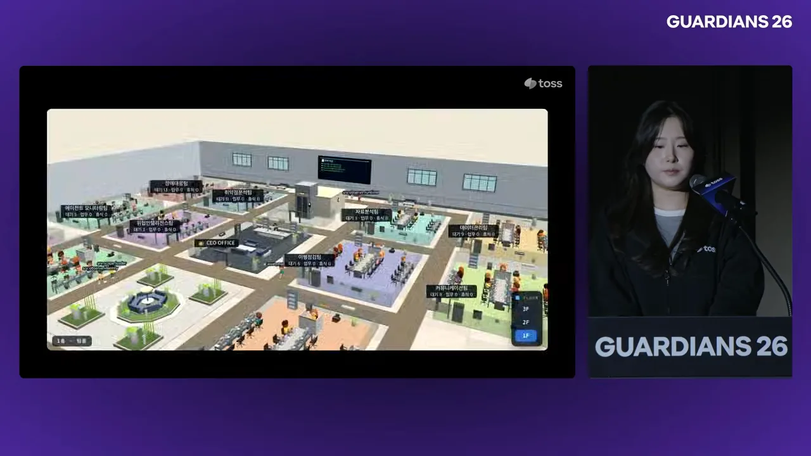
이미 자동화했는데도 모자랐어요
이 팀은 모의해킹, 실제 공격 시나리오로 하는 내부 침투, 정기 취약점 점검을 하면서 AI 접목도 연구해요. 그중 지금 가장 무게를 두는 영역이 취약점 점검과 관리예요. 리소스가 가장 많이 드는 일이기도 해요.
팀은 사내 환경에 맞춘 VMS(Vulnerability Management System)를 직접 만들어 두었어요. 주요정보통신기반시설 같은 체크리스트로 스크립트를 짜서 내부 자산을 자동 점검하고, 신규 취약점 피드도 자동으로 모아요. 내·외부에 노출된 자산과 그 자산에 깔린 취약 패키지를 모으는 정보 수집 시스템도 만들고 있어요.
그래도 한계가 있었어요. 왼쪽 막대그래프는 해마다 공개되는 CVE(Common Vulnerabilities and Exposures) 수예요. 2022년 25,073건에서 2025년 48,151건, 2026년에는 10월 기준 89,857건까지 늘었어요. 발표자는 생성형 AI가 나온 뒤로 늘어나는 속도가 더 빨라졌다고 말해요. 오른쪽 그림은 관리가 미흡해서 생기는 사고를 뜻해요. 관리 대상에서 빠진 자산이 한순간에 공격 표면이 된다는 거예요.
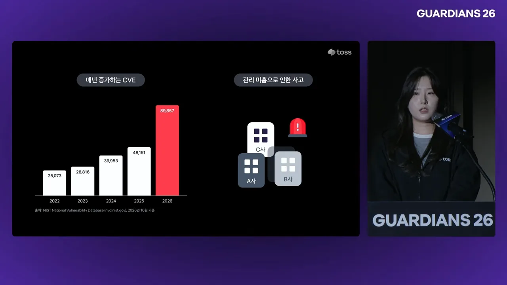
발표자가 직접 관리하면서 느낀 한계는 세 가지예요. 슬라이드의 세 원이 그대로 그 세 가지예요.
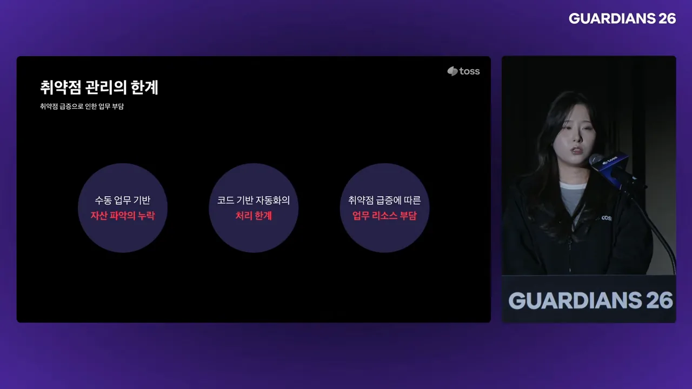
취약점 한 건에 드는 손
기존 방식이 얼마나 손이 많이 가는지는 메신저 대화 모양의 슬라이드가 보여 줘요. 오른쪽 번호가 단계예요. ① 영향 자산 목록을 엑셀로 정리해 패치를 요청하면, ② "저희 팀 자산 아닌데요", "담당자가 바뀌었어요" 같은 답이 돌아와 담당자를 다시 찾아요. ③ 일주일 뒤 진행 상황을 묻고 패치 일정을 잡아 달라고 하고, ④ 한 달 뒤 조치가 됐는지 이행점검까지 해요.
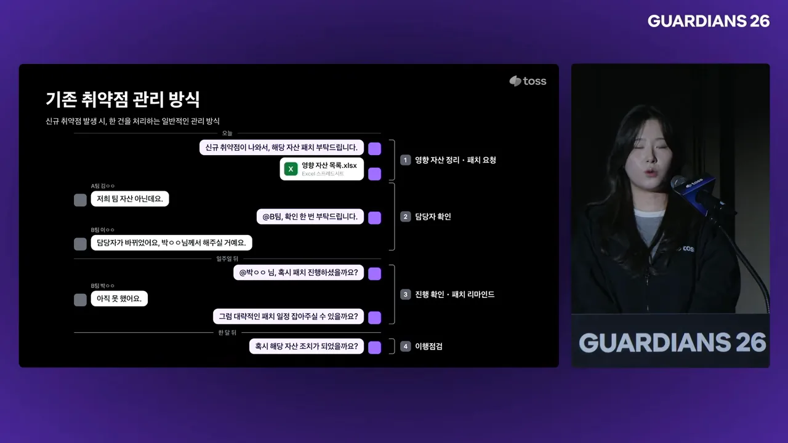
그래서 목표를 세 한계를 모두 푸는 것으로 잡았어요. 영향 자산을 빠짐없이 자동으로 파악하고, 코드 자동화의 한계를 넘고, 업무 리소스를 줄이는 거예요.
회사처럼 짠 AI Agent 팀
어떻게 AI Agent를 쓸지 고민한 끝에 나온 답은 단순했어요. 회사에서 일하는 방식을 AI에게 그대로 적용했어요. 에이전트마다 일을 하나씩 주고, 여러 팀으로 나눠 작은 회사처럼 만들었어요.
슬라이드 왼쪽은 구성 요소예요. 아키텍처는 LangGraph, 에이전트 로그 Tracing은 Langfuse를 썼어요. 모델은 사내에 구축된 것만 썼고, 맨 아래 칸에 qwen3.5-397b-a27b, glm-5.3-flash, deepseek-v4-flash가 보여요. 내부 데이터를 다루고 Multi-Agent로 여러 개를 돌려야 해서, 지속 가능성을 생각해 내부 모델을 골랐다고 해요.
가운데 열은 조직 구조, 오른쪽 열은 팀 예시예요. 조직은 CEO(Chief Executive Officer) 역할의 Supervisor, PM(Project Manager) 역할의 Workflow Manager, Team Leader, Team Member 네 단계예요. 팀은 하는 일이 비슷한 에이전트끼리 묶었어요. 예를 들어 장애 대응 팀은 업무 중 문제가 생기면 Langfuse 로그를 스스로 분석해서 원인을 찾고 고쳐요.
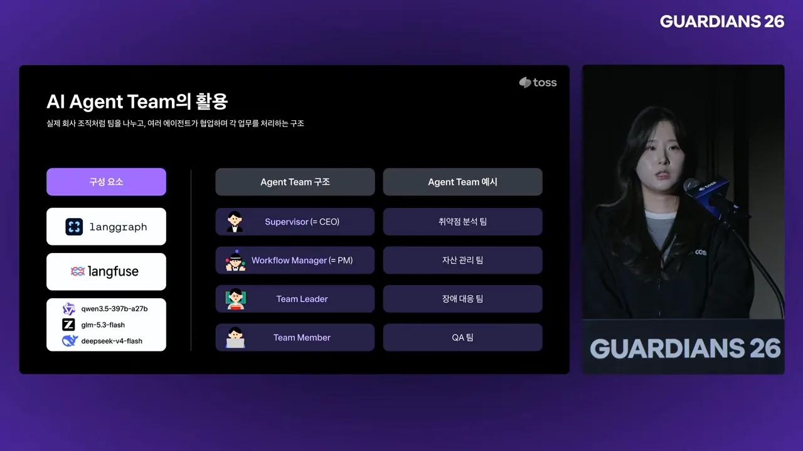
첫째, 오케스트레이션
모든 업무는 Supervisor가 트리거를 받아 담당 Workflow를 찾아 배정하는 데서 시작해요. Workflow마다 Manager가 하나씩 붙어서 실행부터 끝날 때까지 상태를 챙겨요. Workflow는 노드 여러 개로 이뤄지는데, 노드는 업무의 한 단계예요. 오른쪽 아래 상자를 보면 노드1, 노드2마다 에이전트가 Blue와 Green 두 벌로 서 있어요. 한쪽에 문제가 생겨도 다른 쪽이 바로 대신해요.
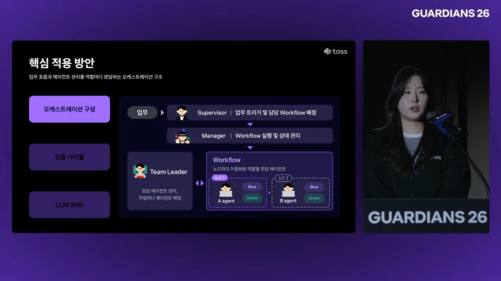
에이전트에게는 아주 작은 일 하나만 줬어요. Claude 같은 상용 모델이 아니다 보니, 여러 일을 한꺼번에 줄 때보다 할 일을 분명히 알고 그 일만 할 때 Hallucination이 줄고 결과도 안정적이었어요. 그래서 시스템 프롬프트도 모든 에이전트가 같은 틀을 쓰게 정형화했어요. 슬라이드의 다섯 줄이 그 틀이에요.
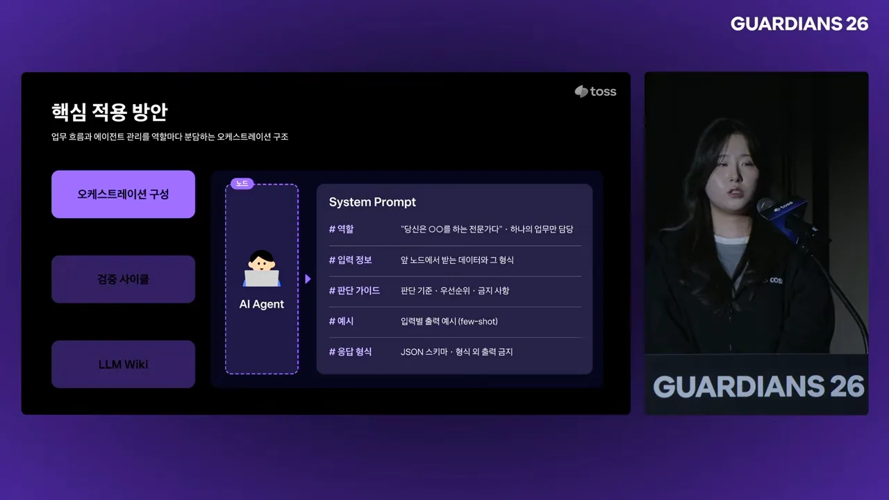
둘째, 검증 사이클
어떤 노드든 '수행 → 검증' 두 단계는 무조건 거쳐요. 검증은 결과의 형식과 근거를 확인해요. 문제가 없으면 다음 노드로 넘어가고, 문제가 있으면 아래 줄로 내려가요. ③ 교정 단계에서 문제 유형을 분류하고 맞는 조치를 해요. 예를 들어 필요한 값이 빠졌으면 입력을 보완해서 해당 노드를 다시 실행해요.
단순 이슈가 아니라 에이전트가 스스로 판단해서 조치한 이슈는 ④ 개선 단계로 넘어가요. 이 단계가 필요했던 건 데이터 자체가 틀린 경우가 많았기 때문이에요. 자산 정보나 담당자 정보가 실제와 다르면 그때마다 사람이 고쳐야 했어요. 이제는 한 번 바로잡은 내용을 에이전트가 기억해서 다음 판단에 반영해요.
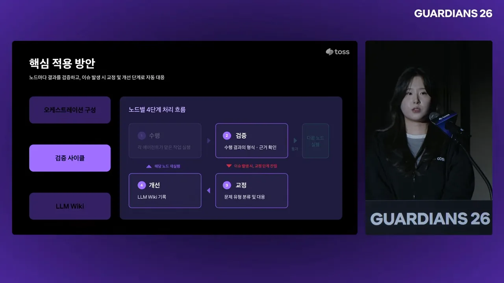
셋째, LLM Wiki
여기서 말하는 LLM Wiki는 Andrej Karpathy의 LLM Wiki 구조를 참고했어요. 슬라이드 왼쪽 '원본 기록'은 담당자가 수정한 내용과 검증 이슈가 자동으로 쌓이는 곳이에요. ① 적재 단계에서 LLM이 이 기록을 주제별 페이지로 정리하고, 페이지마다 출처가 원본에 실제로 있는지 확인해요. 페이지에는 라인별 출처와 히스토리가 남아요. ② 조회 단계에서 에이전트 팀이 판단할 주제의 페이지를 참고 자료로 받아요.
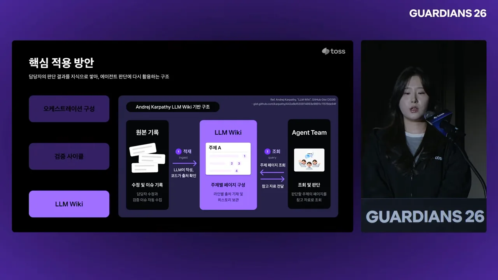
정리하면 오케스트레이션은 업무 분담, 검증 사이클은 결과 검증, LLM Wiki는 자가 학습을 맡아요. 이 셋이 에이전트 팀의 핵심이에요.
취약점 관리·점검 Workflow와 달라진 것
관리 Workflow: 공지 한 건이 조치 요청이 되기까지
에이전트 팀을 가장 먼저 붙인 곳은 취약점 관리예요. 새 공지가 올라오면 자동으로 시작해요. 슬라이드의 다섯 칸이 순서예요. 공지 수집, 에이전트가 공지를 읽고 영향 제품·버전과 취약 조건을 정리하는 공지 분석, 서버·서비스·이미지·PC(Personal Computer)에서 영향 대상을 고르는 영향 자산 조회, 여러 근거로 담당자를 정하는 담당자 매핑, 실제 담당자를 태그하는 조치 요청이에요.
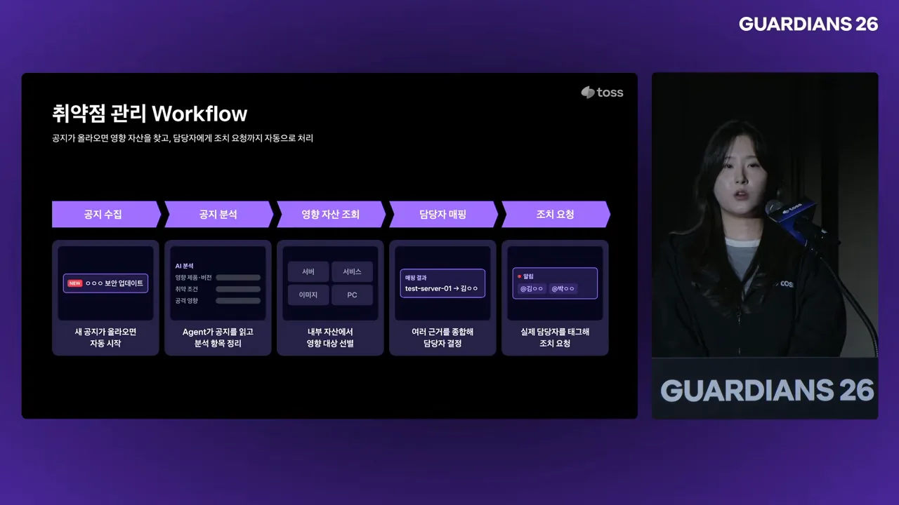
단순히 코드로 자동화하지 않고 에이전트를 쓴 이유는 두 가지예요. 왼쪽은 환경 변화예요. 고정 쿼리로 도는 코드는 자산 DB(Database) 구조나 플랫폼이 바뀌면 사람이 쿼리를 고쳐 다시 배포해야 했어요. 에이전트는 현재 구조를 파악해서 맞는 쿼리를 직접 써요. 오른쪽은 조건 판단이에요. Redis 보안 업데이트 공지가 오면 코드 자동화는 이름이 Redis인 것을 전부 잡아요. 에이전트는 서버에서만 생기는 취약점이라는 조건을 읽고 Python·Java 클라이언트는 빼고 Redis 서버만 잡아요.
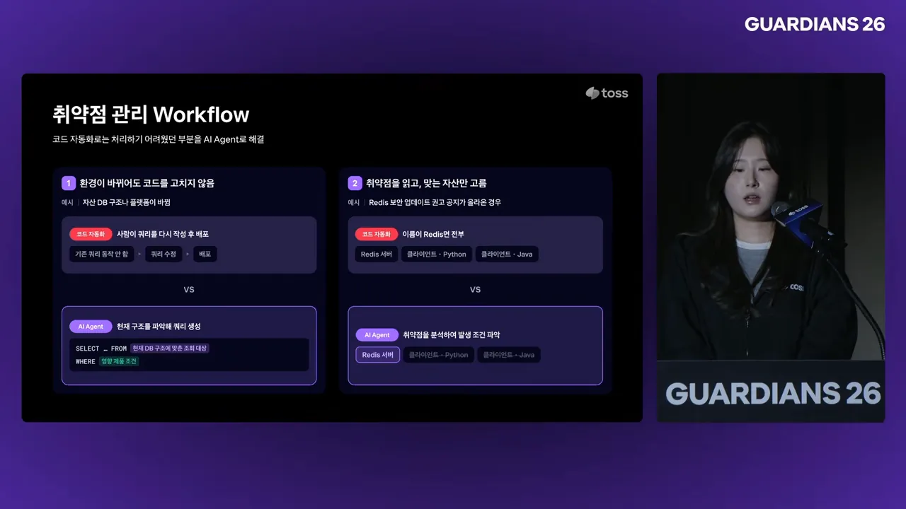
에이전트가 고른 영향 자산은 VMS에서 이렇게 정리돼요. 공지 한 건이 취약점 한 건이에요. 맨 위 진행 상황 줄은 신규 등록 → 자산 식별 → 패치 요청 → 계획 수립 → 취약점 처리 → 이행점검 여섯 단계이고, 칸마다 Agent가 하는지 조치 담당자가 하는지 표시돼 있어요. 오른쪽 '설명'에는 에이전트가 공지를 쉽게 정리한 개요·영향 버전·CVE ID(Identifier)·출처가 있고, 아래 '진단 결과' 표에는 자산별 패키지와 현재 버전(Redis 7.2.4)이 나와요.
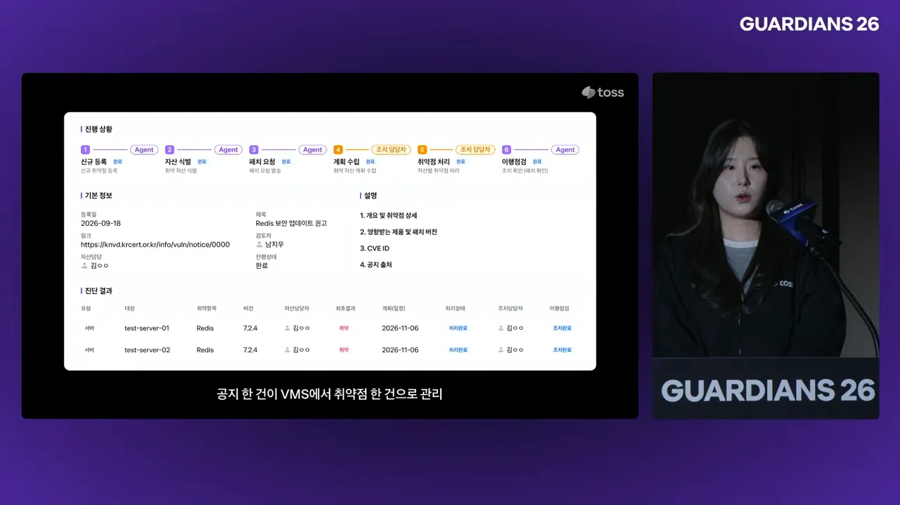
담당자는 일정을 세우고, 처리가 끝나면 상태값을 바꿔 놓아요. 그러면 에이전트가 처리된 항목만 골라 실제로 버전이 올라갔는지 확인하고 조치 완료까지 처리해요. 왼쪽은 예전 방식이에요. 엑셀 목록, 담당자 확인 메시지, 진행 확인 메시지를 사람이 주고받았어요. 오른쪽은 지금이에요. VMS 알림이 담당자를 지정하고 조치를 요청하고, 아래 '이행점검 판정 결과'에서 test-server-01은 버전이 그대로라 취약, test-server-02는 7.2.11로 올라 조치 확인으로 나와요.
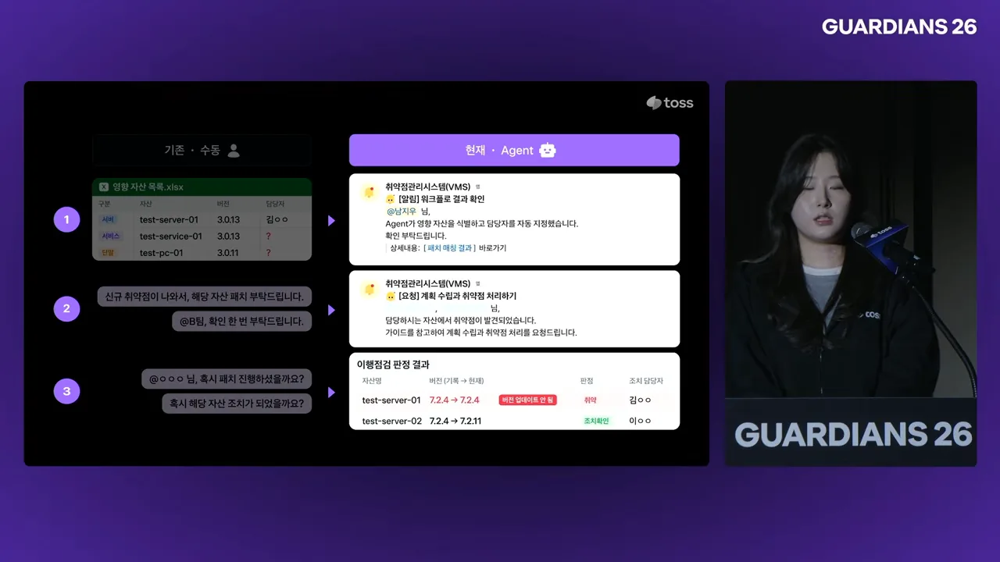
점검 Workflow: 설정 조합까지 보기
관리가 '서버에 취약한 패키지가 깔렸나'를 본다면, 점검은 '이 서버 설정이 안전한가'를 판단해요. 점검도 체크리스트로 자동화는 해 두었지만, 스크립트로 확인할 수 있는 항목만 범위에 들어가요. 왼쪽 보라색 상자가 그 범위(서비스 설정, 파일·디렉터리 권한, 계정·인증, 로그 관리, 패치 관리)예요. 오른쪽은 범위 밖인데 실제로 문제가 되는 설정이에요. SSH(Secure Shell) 키로 이어진 서버 간 신뢰 관계, systemd·cron 설정의 평문 비밀번호, 패키지 저장소 서명 검증 비활성화가 예로 나와요. 맨 아래 빨간 줄처럼, 더 큰 문제는 설정끼리 조합되면서 공격 경로가 생긴다는 점이에요.
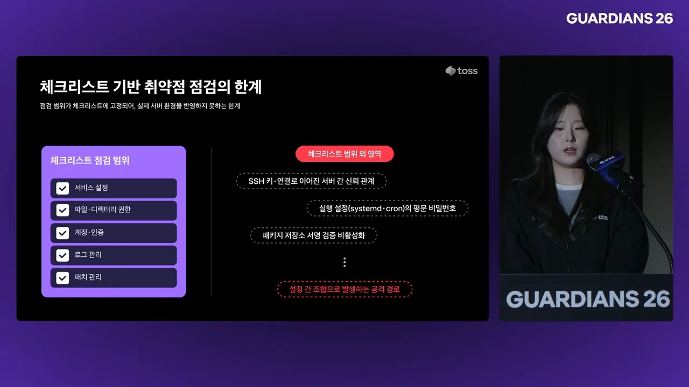
그래서 에이전트 팀으로 점검 Workflow를 만들었어요. 처음 나눈 단계는 환경 수집, 분석, 검증·적재 셋이에요. 환경 수집에서는 서버마다 환경이 달라서 기준을 정한 메타프롬프트를 두고, LLM이 이걸 바탕으로 수집 스크립트를 만들어요. 메타프롬프트에는 대상(운영체제가 다른 모든 Linux 서버), 절대 원칙(서버에 부하나 변경 없이 설정만 조회), 수집 영역, 출력(판정 없이 설정 내용과 줄 번호)이 적혀 있어요. 스크립트는 근거마다 파일과 줄 번호를 기록하고, 안정성 검증을 통과하면 고정돼요. 이후 점검 때마다 Ansible이 전 서버에서 같은 스크립트를 실행해 결과를 모아요.
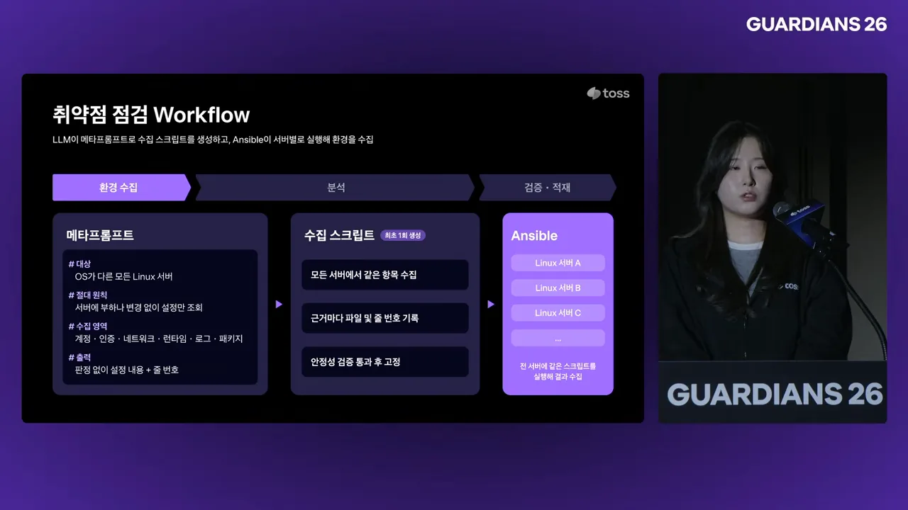
문제는 분석이었어요. 처음엔 에이전트 하나가 수집 데이터 전체를 한 번에 봤어요. 슬라이드의 세 칸이 그때 생긴 문제예요. 같은 설정인데 1회차 high, 2회차 critical, 3회차 medium처럼 위험도가 매번 달랐고, 같은 서버를 다시 점검하면 결과 수도 달랐어요. 새로 찾은 5건 중 4~5건이 오탐이었고, 명백한 위험 설정을 5회 연속 놓치기도 했어요.
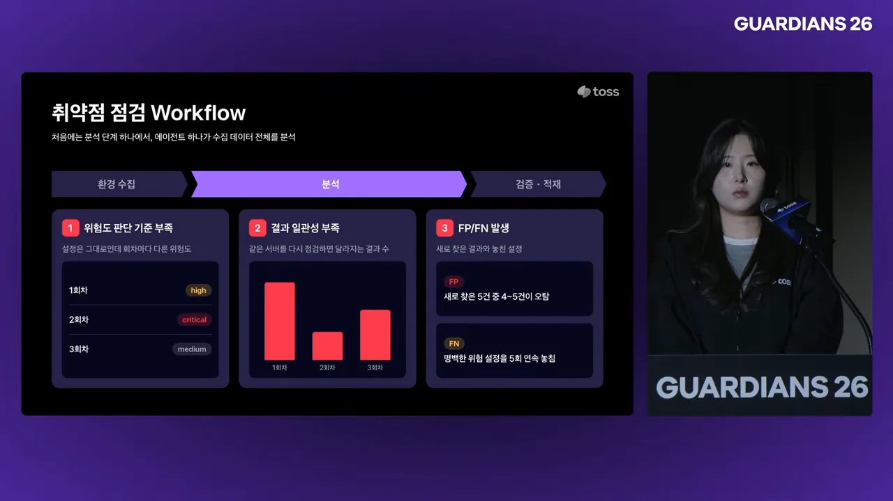
분석은 데이터 분류와 시나리오 분석 두 단계로 나눴어요. 데이터 분류에서는 수집 데이터를 미리 정한 기준표와 한 줄씩 대조해서 양호, 취약, 미판정으로 나눠요. 양호는 분석에서 빼고, 취약은 바로 취약점으로 등록하면서 조합 분석에도 써요. 기준표에 조건이 없고 조합에 따라 위험이 달라지는 미판정만 에이전트에게 넘겨요. 코드가 할 수 있는 건 코드가 빠르게 하고, 판단이 필요한 것만 에이전트가 하는 구조예요.
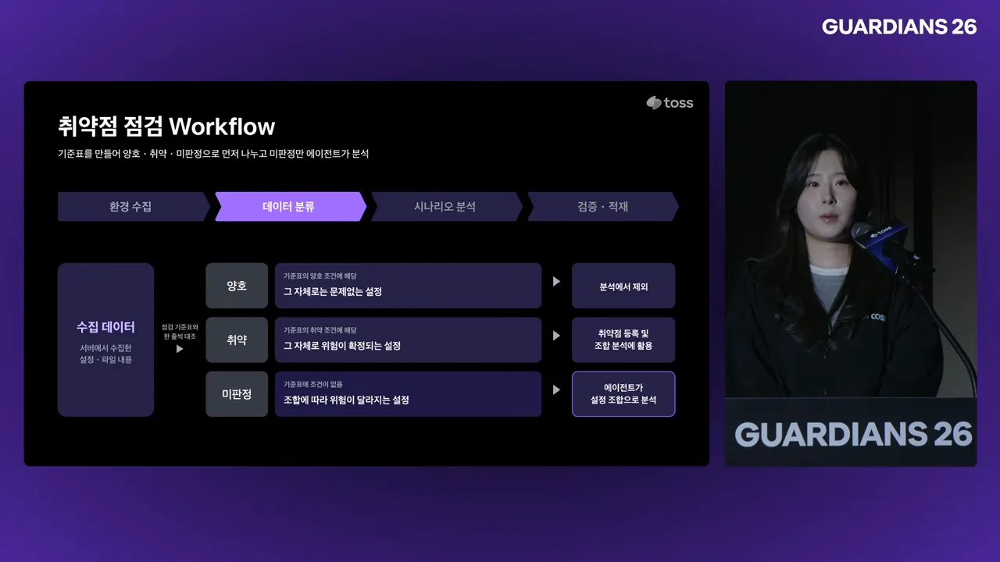
시나리오 분석은 공격 관점별로 에이전트를 나눴어요. 하나가 모든 공격 유형을 보면 넓고 얕게만 보기 때문이에요. Specialist 다섯 개(외부 침입, 권한 탈취, 비밀값 노출, 네트워크 노출, 보안 통제)가 맡은 관점만 깊게 봐서 오탐을 줄이고, 그 밖의 유형은 Generalist 하나가 봐서 미탐을 메워요. 결과는 '어떤 설정들이 어떤 경로로 공격까지 이어지는지'와 '근거가 수집 데이터 몇 번째 줄에 있는지'를 담은 취약 시나리오예요.
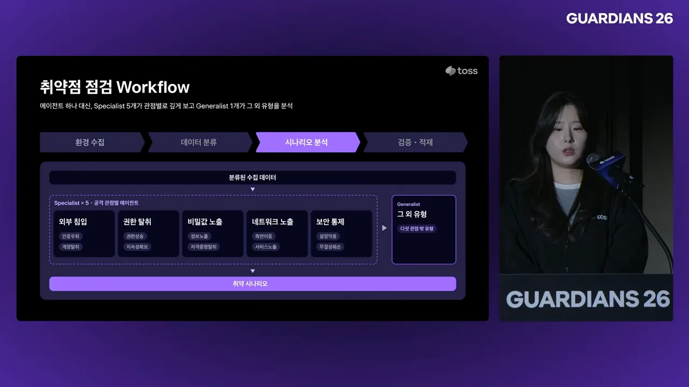
마지막은 검증·적재예요. 분석에 과탐이 있을 수 있어서 반증 에이전트가 시나리오를 한 번 더 반박해요. 근거를 수집 데이터와 비교해서 하나라도 없으면 결과에서 빼요. 통과한 시나리오만 VMS에 취약점으로 등록돼요. 예시 화면의 시나리오는 '빈 비밀번호 test 계정 SSH 로그인 후 NOPASSWD sudo로 root 획득'이에요. 공격 경로 두 줄과, 근거인 /etc/ssh/sshd_config 58번째 줄 PermitEmptyPasswords yes가 함께 붙어 있어요.
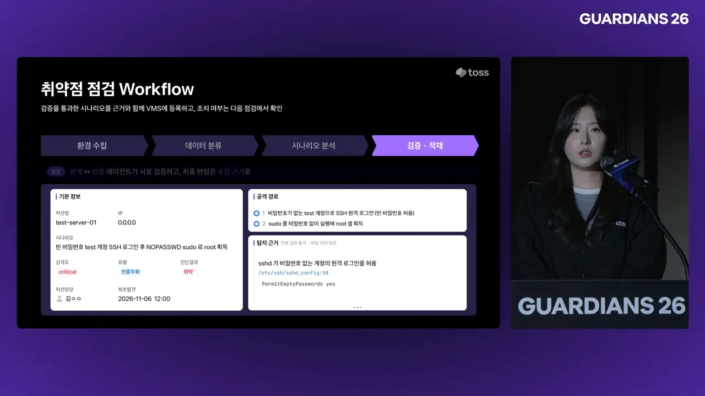
다음 점검 때는 같은 서버를 다시 수집해서 취약했던 설정이 바뀌었는지 보는 이행 점검도 해요.
도입 전후로 달라진 것
가장 눈에 띄는 변화는 시간이에요. 신규 취약점 한 건 처리에 짧으면 30분, 길면 한 시간이 걸렸는데, 지금은 에이전트가 평균 1분 안에 처리해요. 슬라이드에는 '30분~1시간 → 54초'로 적혀 있어요. 두 번째는 업무 자체가 나아졌다는 점이에요. 공지마다 전체 자산을 빠짐없이 보니 영향 자산 누락이 크게 줄었고, 점검은 설정과 설정이 엮여 생기는 경로까지 봐요. 세 번째는 발표자가 가장 중요하게 본 리소스예요. 반복 업무를 에이전트가 대신하면서 수동 리소스가 크게 줄었어요.
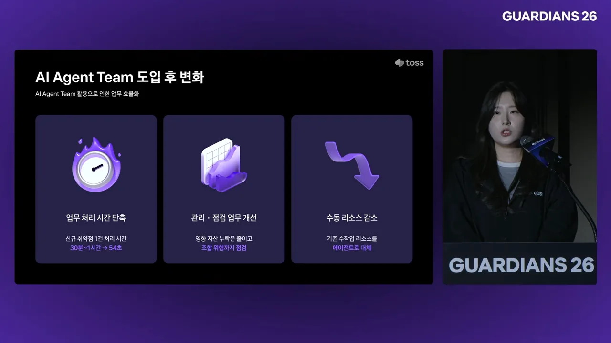
아직 끝은 아니에요. 왼쪽 카드는 위험도 기반 취약점 관리예요. 모든 취약점을 빠짐없이 패치하는 원칙을 지켜 왔지만, 양이 늘면서 전부를 최우선으로 조치하긴 어려워졌어요. 사내 기준으로 위험도를 평가해 Workflow에 넣고, 위험한 건 즉시, 나머지는 정기 패치로 처리하려고 해요. 오른쪽 카드는 에이전트 팀 개선과 확장이에요. 남은 수동 업무도 에이전트에 넘기고, 새 AI 기술을 자동으로 모아 A/B 테스트한 뒤 검증된 것은 에이전트 팀이 스스로 적용하는 구조를 만들 계획이에요.
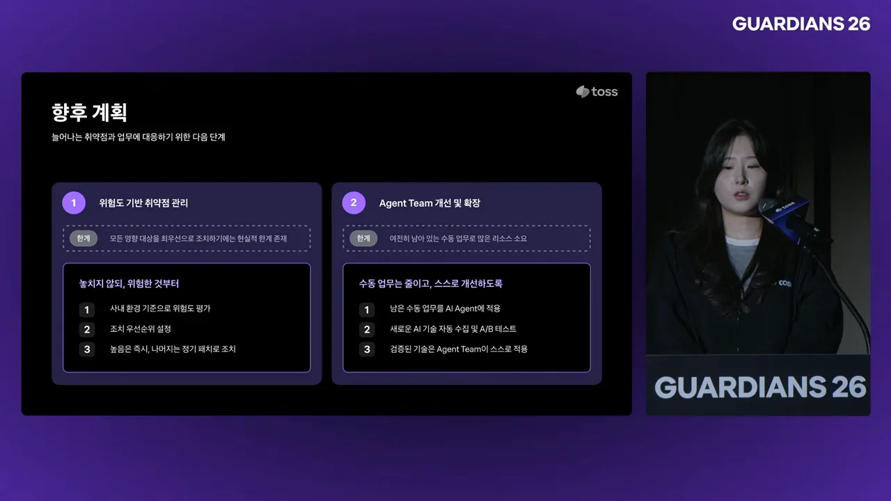
찾는 속도가 아니라 고치는 속도: VulnOps
두 번째 발표는 토스증권 Security Researcher 김태욱 님이에요. 하루에도 몇 번씩 받는 보안 이슈 요청을 AI에게 '토스'할 수 없을까 하는 고민에서 시작했다고 해요.
찾는 속도가 몇 배가 됐어요
LLM이 Red Team 업무에 보편화되면서 일의 시간 단위가 바뀌었어요. 왼쪽 '이전'은 사람이 코드를 읽고 가설을 세우고 직접 재현하느라 한 달에 한 서비스씩 봤어요. 오른쪽 '지금'은 여러 모델이 병렬로 분석하고 서로 교차검증까지 해서 하루 이틀이면 결과가 나와요. 분석량이 몇 배가 되니 찾는 취약점도, 관리할 취약점도 몇 배가 됐어요.
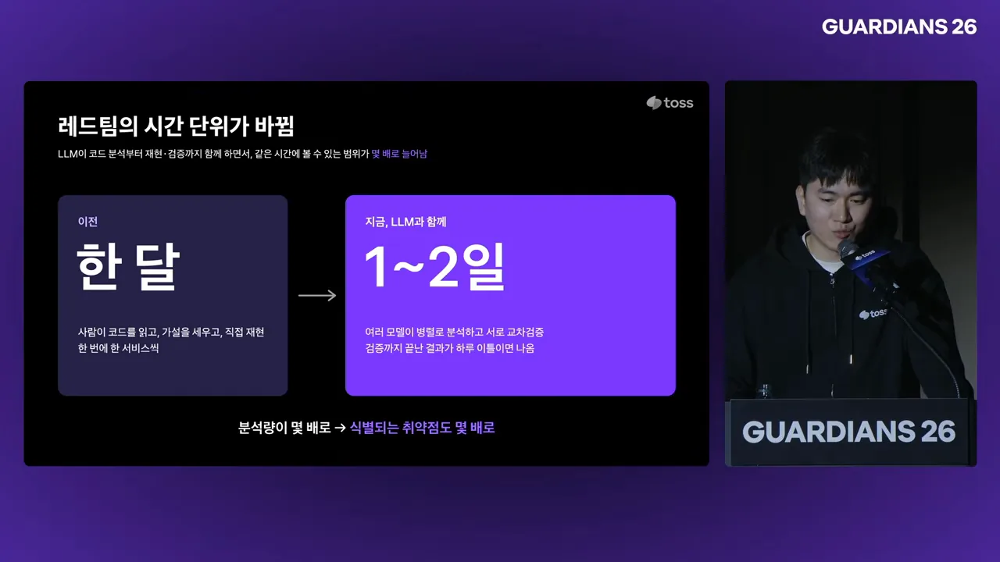
이건 업계 전체의 일이에요. 슬라이드의 네 숫자가 근거예요. Linux 커널 CVE 432건이 2026년 7월 19~20일 단 이틀 만에 공개됐어요. Pwn2Own Berlin 2026은 19년 만에 처음으로 정원이 차서, 취약점을 찾고도 무대에 서지 못한 연구자가 생겼어요. Anthropic Claude Opus 4.6은 오픈소스에서 고위험 취약점 500개 넘게 찾아 검증했어요. NVD에는 분석을 미룬 CVE가 2.9만 건 쌓였어요.
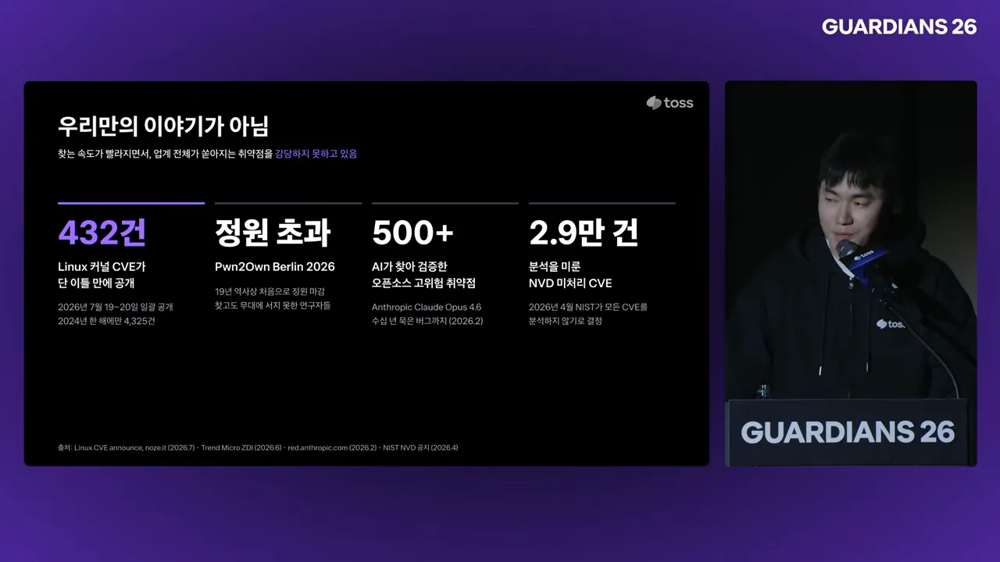
취약점을 찾는 도구는 이미 넘쳐요. 슬라이드에는 Strix, Shannon, PentestGPT, HexStrike AI, CyberStrikeAI, ARTEX가 GitHub 별 수와 함께 나와요. 아래에는 '도구는 누구나, 공격자까지 똑같이 가져다 씀'이라는 문구가 있어요. 그러니 결국 중요한 건 우리 업무에 맞는 프로세스라는 게 발표자의 결론이에요. 그래서 팀은 취약점 관리부터 손댔어요.
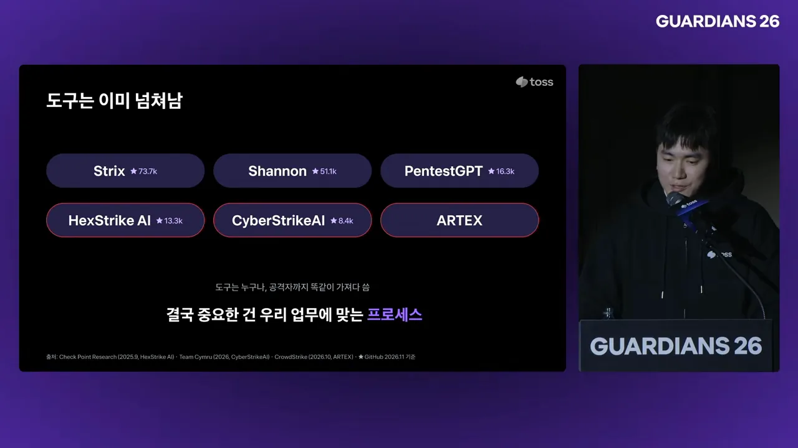
흩어져 있으면 생기는 일
먼저 취약점이 나오는 과제를 모두 모아 봤어요. 발표자는 '열 개가 조금 넘더라'고 말하고, 뒤 슬라이드는 11종으로 세요. 상시 진단(보안성검토, ASM(Attack Surface Management), SAST(Static Application Security Testing), 이미지 의존성 스캔), 사고·이슈 대응(영향도조사의 CVE 대응·보안사고 대응), 자체 점검(자체침투테스트, 테마 점검), 외부 점검(외부모의해킹, 외부정기점검, 버그바운티), 컴플라이언스(라이선스 유지를 위한 필수 점검)예요. 과제마다 형식도, 담당자도, 조치 확인 방법도 제각각이었어요.
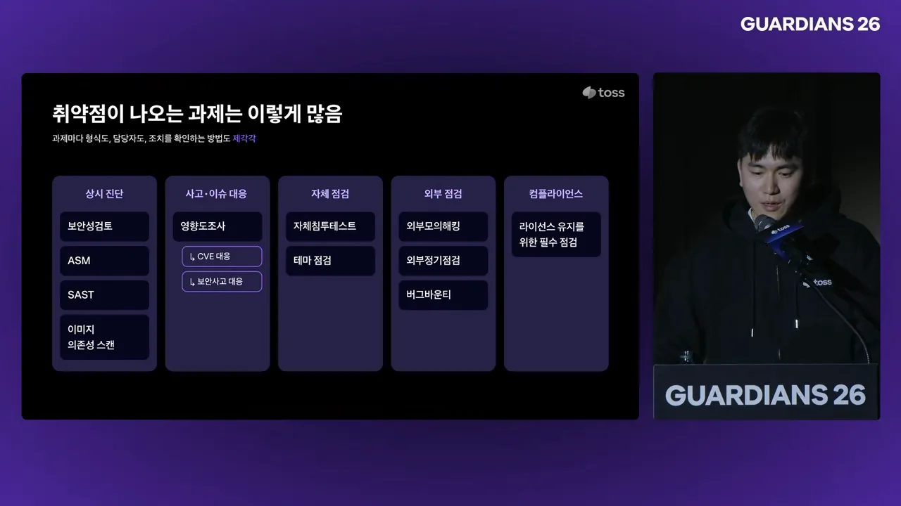
이력을 보니 세 가지 문제가 쌓여 있었어요. 같은 취약점이 과제마다 따로 보고·관리되는 중복, 고쳤는지 언제 고쳤는지 끝까지 확인하기 어려운 누락, 무엇부터 고칠지 과제마다 판단이 다른 기준 없음이에요. 이게 쌓여 관리되지 않는 Gray 영역이 생겼어요.
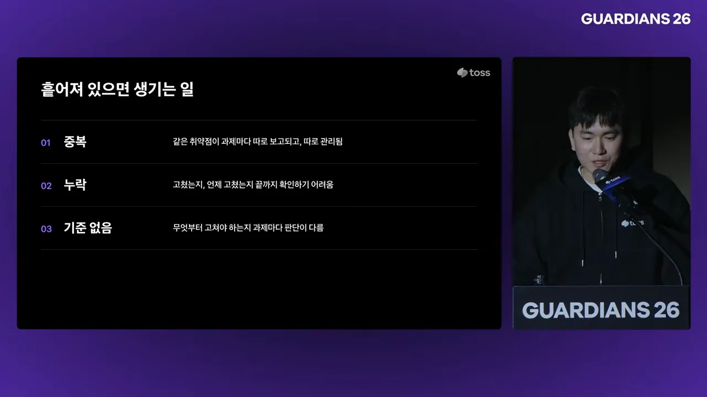
VulnOps라는 원칙
팀의 전략은 VulnOps 개념을 업무에 녹이는 것이었어요. 짧게 말하면 취약점이 생기는 일을 모으고, 취약점을 한곳에 모으고, 반복과 식별은 AI에게, 관리는 모두 취약점 원장으로 해요. 발표자의 정의는 '찾는 속도가 아니라 고치는 속도에 맞춰 운영하는 방식'이에요. DevOps가 개발과 운영을 한 흐름으로 묶듯, 취약점도 찾는 데서 끝내지 않고 고쳐질 때까지 운영해요.
슬라이드 아래 줄이 그 흐름이에요. 찾기 → 모으기(중복 제거) → 판정·우선순위 → 조치 → 확인이에요. 확인에서 조치가 미흡하면 다시 조치로 돌아가고, 확인이 끝나도 재발 감시로 찾기와 이어져요. 오른쪽 아래에는 '토스증권 프로세스에 맞게 재해석'이라는 표시가 있어요.
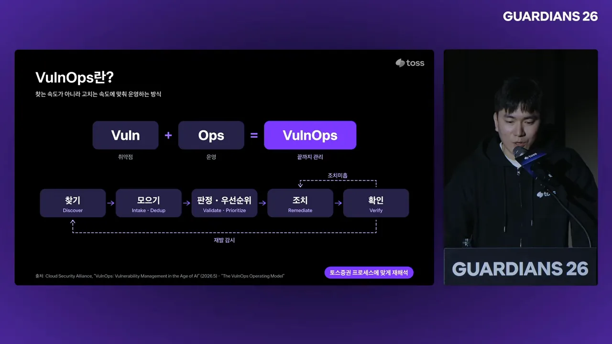
이 원칙을 프로세스에 녹이려고 시스템 세 개를 만들었어요. 발표 내내 나오는 이름이라 먼저 짚어요. HybridASM은 공격 표면을 찾고, SecBridge는 모든 결과·정보·조치 관리를 모으는 다리이고, BBeeBBee는 여러 AI 모델로 진단하고 서로 검증해요.
세 시스템의 상세 흐름은 이렇게 이어져요. HybridASM은 클라우드·DNS(Domain Name System)에서 외부 공격 표면과 내부 변경을 진단해 자산과 Finding을 SecBridge로 보내요. SecBridge는 보안성 검토 요청까지 받아 모으고, 판정·조치를 담당자·개발자와 주고받아요. 진단이 필요하면 BBeeBBee에 요청하고, BBeeBBee는 코드 저장소를 보며 AI 진단·교차검증·상시 침투테스트를 한 뒤 결과를 돌려주고 취약점 원장을 남겨요.
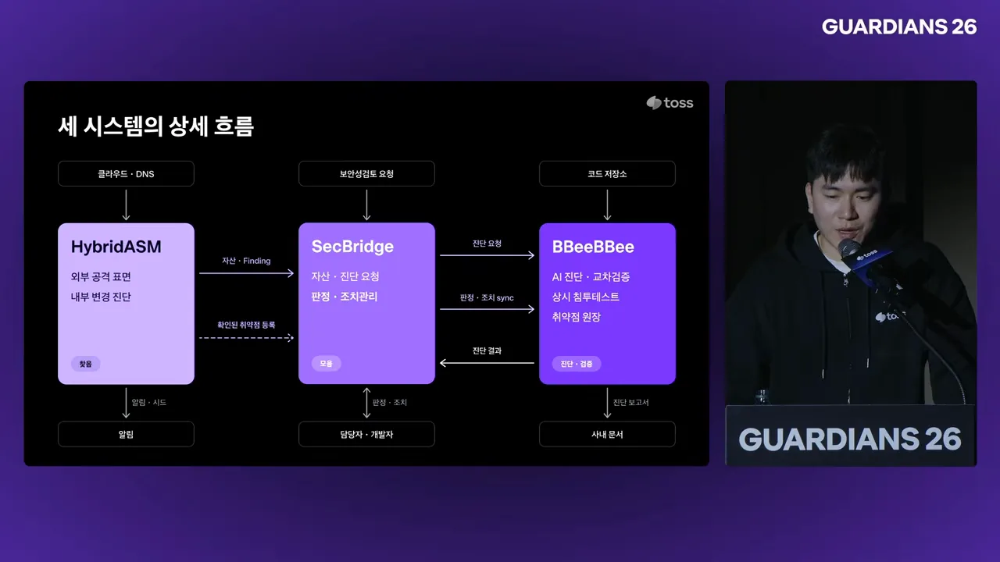
개발부터 운영까지 단계로 나누면, 개발 단계에서는 코드와 PR(Pull Request)을, 배포 단계에서는 설정 변경·이미지·보안성 검토를, 운영 단계에서는 외부 표면·침투 테스트·이행 점검을 봐요. 한 단계만 지키는 게 아니라 코드가 만들어질 때부터 서비스로 떠 있는 동안까지 계속 따라가는 구조예요.
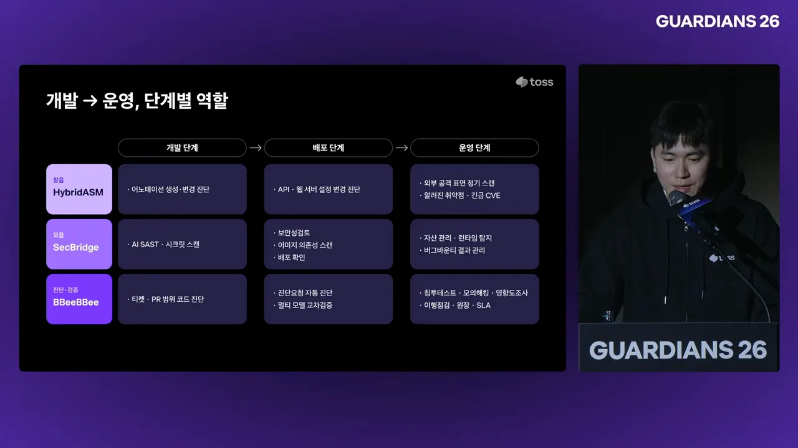
HybridASM · SecBridge · BBeeBBee
HybridASM: 바깥 표면과 안쪽 변경을 함께
HybridASM은 흔히 아는 ASM과 조금 달라요. 슬라이드 윗줄은 외부 공격 표면을 정기적으로 보는 흐름이에요. 클라우드 전 계정과 DNS를 수집하고, 도메인과 오리진·WAF(Web Application Firewall)·방화벽·포트로 인벤토리를 만들고, 노출과 실위험을 판정해요. 아랫줄이 다른 점이에요. 토스증권 전체의 API(Application Programming Interface)·API Gateway·어노테이션·웹 서버 설정이 바뀌거나 새로 생기면 즉시 감지해서, 에이전트가 생성·변경분을 바로 진단해요. 결과는 SecBridge에 쌓이고, 담당자가 정탐 여부를 최종 검증한 뒤 BBeeBBee의 취약점 원장으로 가요.
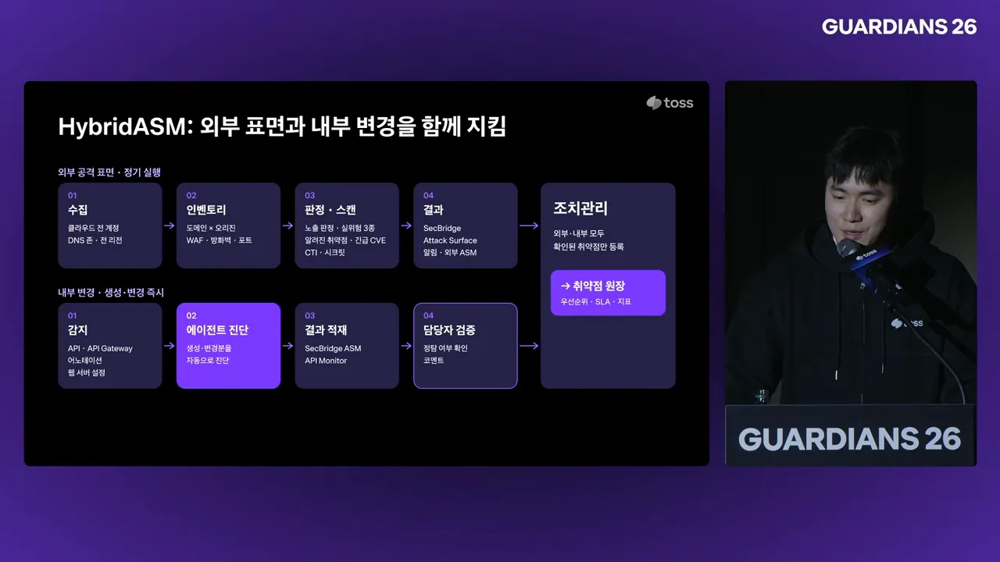
실제 화면(값은 모두 테스트 데이터)에서 왼쪽은 외부에 노출된 자산을 위험 등급별로 보는 Attack Surface 화면이고, 오른쪽은 새로 생기거나 바뀐 API·설정을 상태별로 따라가는 API Monitor 화면이에요. 팀은 이걸 매일 확인하고, 한국뿐 아니라 서비스 중인 미국·일본 쪽도 함께 봐요.
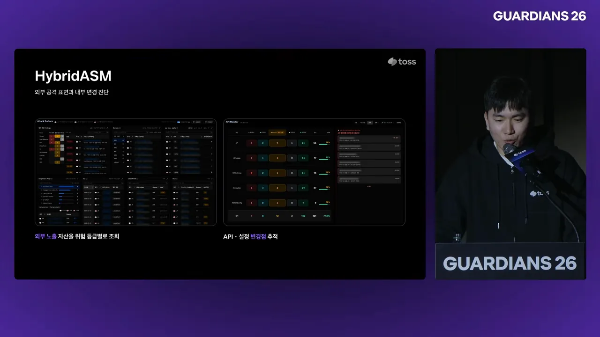
SecBridge: 찾는 쪽과 고치는 쪽을 잇는 다리
다리 그림 왼쪽은 찾는 쪽이에요. HybridASM(외부 표면), BBeeBBee(코드·침투), 빌더(보안성검토), 버그바운티(외부 점검)가 있어요. 오른쪽 고치는 쪽에는 정탐을 확인하는 담당자와 조치·이행점검을 요청받는 개발자가 있어요. 다리 아래 세 기둥이 SecBridge가 하는 일이에요. 무엇이 어디 있는지(자산 관리), 정탐인지 오탐인지(판정), 누가 언제까지 고칠지(조치관리)예요. 확인된 취약점은 TSVE라는 내부 식별 ID를 달고 취약점 원장에 남아요.
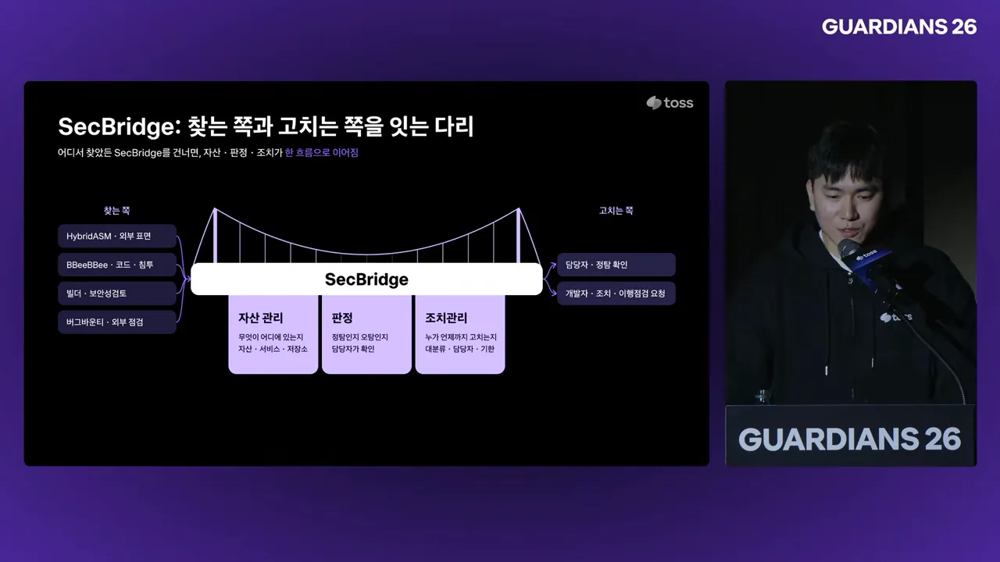
SecBridge 화면은 세 칸이에요. 왼쪽은 조치 관리 목록이고, 모든 건에 TSVE ID와 담당자, 조치 상태가 붙어요. 가운데는 진단 하나에서 나온 하위 취약점들이고, 담당자가 정탐 판정, 이행 점검, 다른 모델의 교차 검증 요청을 같은 카드 안에서 해요. 오른쪽은 배포 모니터링이에요. 조치한 커밋이 배포에서 빠지는 일을 막으려고, 조치 커밋이 운영에 배포됐는지까지 확인한 뒤 완료 처리해요.
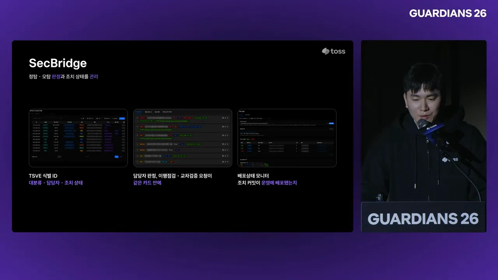
이렇게 하려면 자산이 한곳에 모여 있어야 해요. 그래서 클라우드 외부 표면, 내부 변경, 사내 인프라, 서비스 URL(Uniform Resource Locator), 컨테이너 이미지, 코드 저장소를 SecBridge 자산 인벤토리로 모았어요. 인벤토리 상자 안의 세 줄처럼 요청 경로, 열린 포트, 배포 여부, 그리고 어떤 Pod를 거치는지까지 함께 확인해요. 이 정보는 BBeeBBee로 넘어가 진단과 침투 테스트의 기준이 돼요.
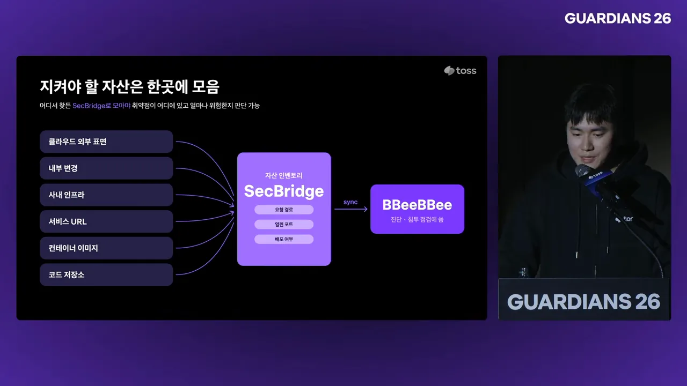
자산을 추적하려고 만든 기능도 있어요. 도메인 하나를 넣으면 DNS에서 시작해 CDN(Content Delivery Network), WAF, Load Balancer, 웹 서버, Pod, 이미지까지 요청이 실제로 어디를 지나가는지 이어서 보여 줘요. 취약점이 하나 나오면 어느 서버의 어떤 코드인지 바로 따라갈 수 있어요. 팀은 이걸 영향도를 파악하거나, 침투 테스트 때 그 서버로 어디까지 접근할 수 있는지 확인하는 데 써요.
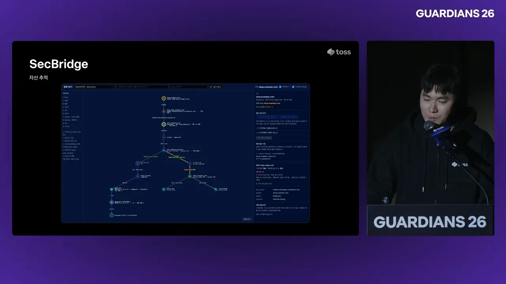
BBeeBBee: 여러 모델이 진단하고 서로 검증
BBeeBBee의 진단 흐름은 윗줄과 아랫줄로 읽어요. 진단 요청이 자동으로 생기면 모델들이 각자 점검 범위를 찾고 합의된 곳만 대상으로 삼아요. 그다음 모델 A·B·C가 각자 격리된 작업 공간에서 동시에 분석하고, 다른 모델이 2차 의견으로 교차검증해요. 남은 Finding만 SecBridge로 올라가고, 담당자가 최종 검증해 조치를 요청해요.
아랫줄은 조치 이후예요. 개발자가 고치면 취약점을 찾았던 모델이 조치 커밋과 PR을 찾아 다시 판정하는 이행점검을 하고, 담당자가 한 번 더 확인해요. 통과하면 조치 커밋이 운영에 배포될 때까지 자동으로 모니터링하고, 배포가 확인되면 완료 처리해 원장에 남겨요. 아래 'SAST 룰 생성' 칸은 조치 커밋을 근거로 LLM이 SAST 룰을 만들어 자동 적용하는 부분이에요. 비슷한 취약점을 점검 전에 SAST에서 최대한 거르려는 목적이에요. 조치부터 완료까지 이 과정은 BBeeBBee뿐 아니라 팀이 처리하는 모든 취약점의 공통 프로세스예요.
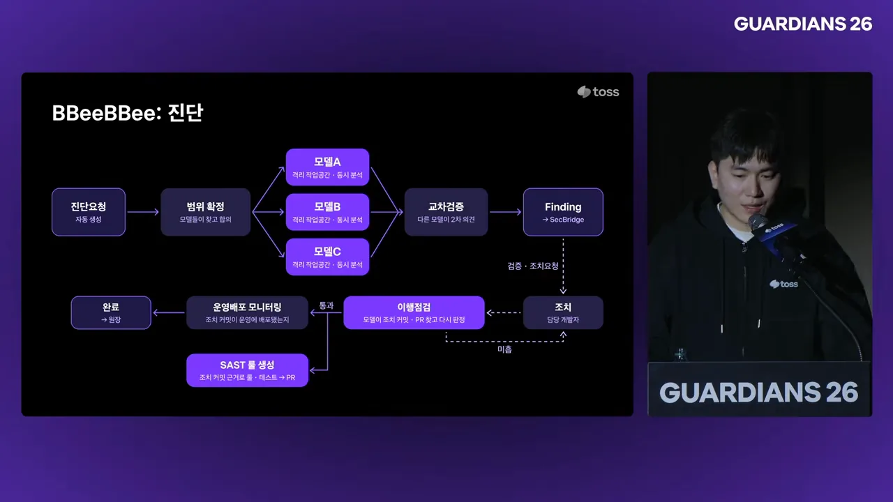
진단하며 쌓인 정보는 모두 지식으로 남아요. 왼쪽 그림은 저장소와 API 사이의 호출 관계와 흐름이에요. 오른쪽 Repo Map은 이렇게 남긴 관계가 쌓인 지도예요. 확대하면 저장소끼리 어떻게 이어지는지 보이고, 저장소 하나를 누르면 그 저장소의 API와 연결 관계가 나와요. 이 지식은 다음 점검에서 에이전트가 범위를 잡을 때 쓰이고, 담당자도 점검한 Repo의 관계를 빠르게 확인할 때 써요.
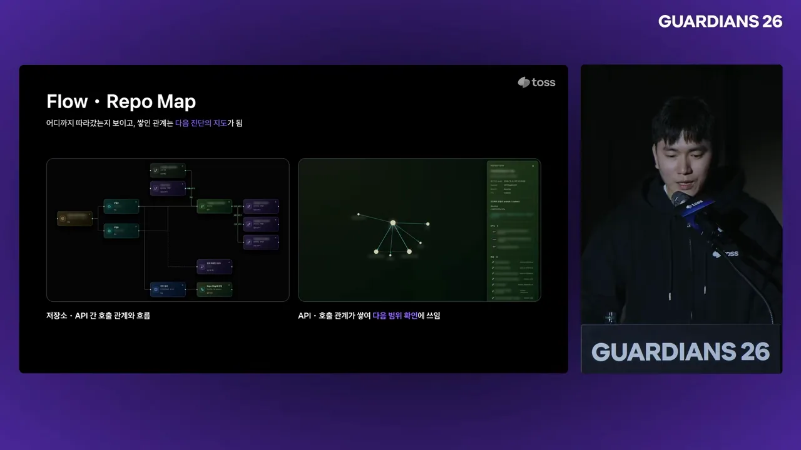
침투 테스트 기능은 세 가지예요. 자산 점검은 Black-box 방식으로, 아무 정보 없이 식별된 내·외부 자산 전체에 계속 침투 테스트를 해요. Repo 점검은 White-box 방식으로, 코드를 근거로 실제 악용 가능한지 확인한 뒤 회차를 남겨 추적해요. 영향도조사는 새 CVE나 보안 이슈가 나왔을 때 서비스 전체 중 어디에 영향이 있는지 확인해요.
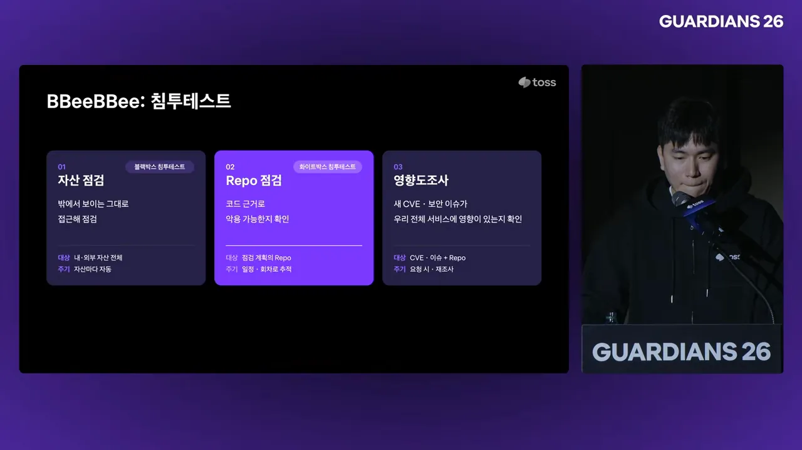
영향도 조사 예시 화면이에요. 왼쪽은 재조사 회차마다 신규·지속·해소 건수를, 오른쪽은 저장소별 영향도와 외부 호출 여부, 판정을 보여 줘요. 최근 Node 쪽 크리티컬 취약점이 나왔을 때 이 기능으로 영향받는 토스증권 Repo를 빠르게 찾아 조치했다고 해요. ASM과 함께 실제로 취약점이 가장 많이 나오는 기능이에요.
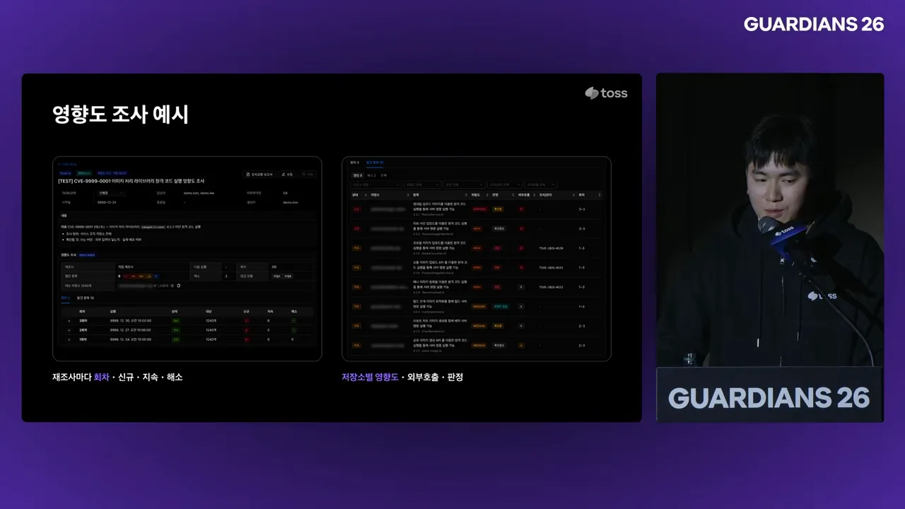
지금까지의 기능은 대시보드에서 봐요. 왼쪽은 사람이 먼저 봐야 할 것을 모아 주고 업무별 진행과 작업 추이를 보여 줘요. 오른쪽은 모델들이 지금 무슨 일을 하고 있는지, 일정은 어떤지, 심각도별로 무엇이 발견 후보로 나왔는지 보여 줘요.
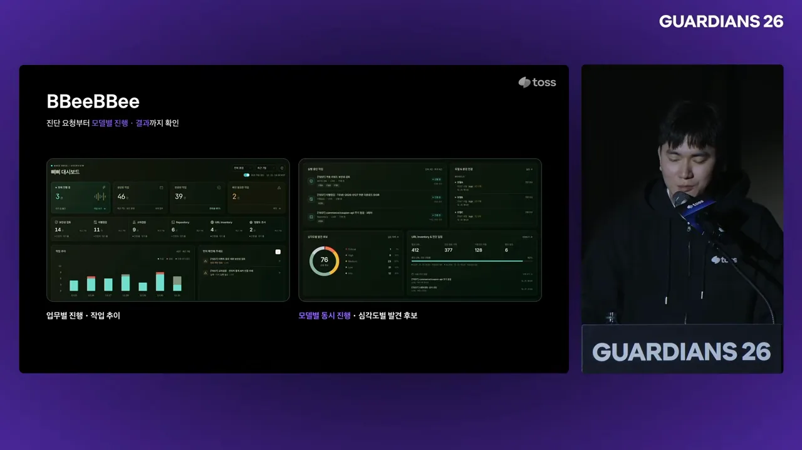
취약점 원장과 우선순위, 남은 숙제
출처는 여러 개, 원장은 하나
취약점도 자산처럼 원장을 만들어 한곳에 모았어요. 왼쪽의 과제 열한 개(보안성검토, ASM, 이미지 의존성 스캔, SAST, 영향도조사, 자체침투테스트, 외부모의해킹, 외부정기점검, 버그바운티, 자체·상시 점검, 라이선스 필수 점검)가 어디서 찾았든 SecBridge 조치관리로 등록되면 BBeeBBee 취약점 원장으로 자동으로 합쳐져요. 원장에서 같은 취약점은 한 건으로 묶이고, 출처·담당자·우선순위 같은 기준이 붙어요. 이 원장이 다음 점검의 Knowledge Base가 돼요.
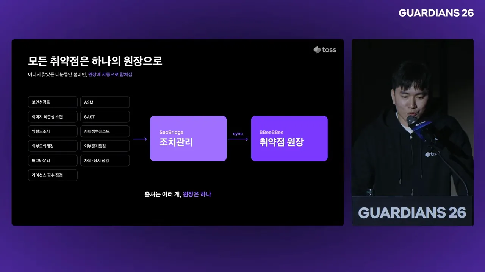
무엇부터 고칠지는 위험이 정해요
우선순위는 CVSS 점수가 아니라 실제 위험으로 매겨요. 고객 대상이거나 인터넷에 노출됐는지, 외부에서 실제로 확인됐는지, 배포된 서비스인지, 재발했는지 같은 것이에요. 실제 리스크 기반으로 순서를 정하는 게 VulnOps의 취지라서, 항목과 가중치를 계속 바꿔 가며 최적을 찾는 중이라고 해요. 슬라이드에 적힌 지금 식은 이래요.
| 곱하는 항목 | 값 |
|---|---|
| 심각도 기본 점수 | 9 · 7 · 5 · 3 |
| 고객 대상 또는 인터넷 노출 | ×1.5 |
| 외부에서 확인 | ×1.3 |
| 배포된 서비스 | ×1.2 |
| 담당자 정탐 확인 | ×1.2 |
| 재발 | ×1.3 |
점수로 등급과 기한이 정해져요. P1은 12점 이상이고 7일 안에, P2는 8점 이상이고 30일 안에, P3는 5점 이상이고 90일 안에, P4는 그 외로 180일 안에 조치해요. 슬라이드 아래 작은 글씨에는 SLA(Service Level Agreement)가 정탐 확인 시점부터 세어지고(직접 등록은 발견일부터), 원격 악용 계열이거나 모델 2개 이상이 동의하면 ×1.1이 붙고, 조치권고·위험수용은 SLA에서 빠진다는 규칙이 있어요.
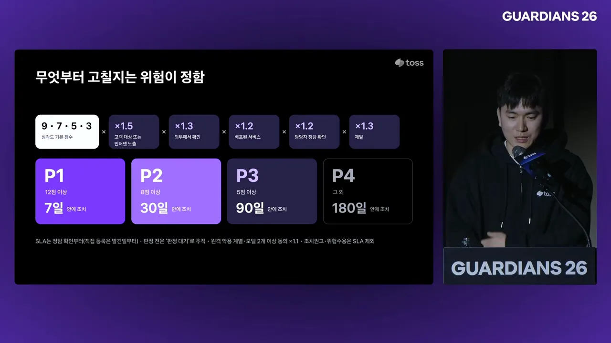
원장 대시보드에서는 진단에서 나온 후보 취약점이 중복을 걸러 원장에 쌓이고, 처리 흐름과 우선순위별 분포, 기한을 넘긴 건수를 봐요. 아래 띠 그래프가 후보 123건이 중복 제거와 판정을 거쳐 P1~P4로 나뉘는 흐름이에요.
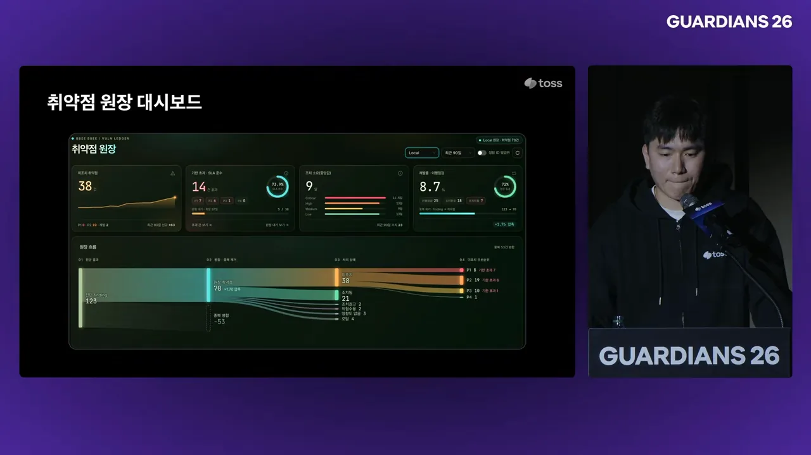
한 건을 열면 관리 정보가 다 보여요. 예시는 쿠폰 다운로드 API의 couponId 파라미터로 남의 쿠폰을 쓸 수 있는 IDOR(Insecure Direct Object Reference) 취약점(TSVE-2026-0127)이에요. 오른쪽 이력에서 10월 20일 모델A와 모델B가 찾았고, 담당자가 정탐을 확인해 이행점검까지 통과했어요. 그런데 10월 31일 주기 점검에서 같은 유형이 재발했어요(주황 테두리 줄). 재발 가중치가 붙어 우선순위가 다시 올라가고 조치 기한도 새로 잡혔어요. 점수 칸에는 21.62가 보여요.
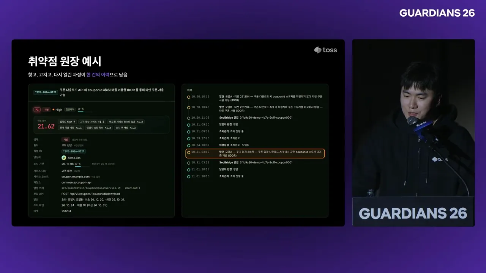
만들면서 부딪힌 문제
슬라이드 왼쪽이 어려움, 오른쪽이 해결이에요.
- 같은 취약점이 여러 건: 모델마다 제목·줄 번호를 다르게 보고했어요. 코드 라인이 아니라 저장소·취약점 계열·Sink 파일·함수가 같으면 한 건으로 묶는 룰을 넣었더니 중복이 대부분 사라졌어요.
- 진단 범위를 잘못 잡음: 규칙 기반으로 범위를 잡으니 빠지거나 과하게 들어갔어요. 규칙을 늘리는 대신 모델이 직접 범위를 찾게 하고, 두 모델 이상 동의한 저장소만 대상으로 했더니 정확도가 크게 올랐어요.
- 쌓여 있던 이전 취약점: 과제별 보고서와 시트에 흩어져 있어서, 정리해 조치관리에 등록하고 TSVE ID를 붙여 원장으로 합치는 데 시간이 오래 걸렸어요.
- 자산 정보가 흩어져 있음: 클라우드·방화벽·웹 서버 정보가 시스템마다 따로 있어서, 직접 모아 다듬는 데도 시간이 걸렸어요.
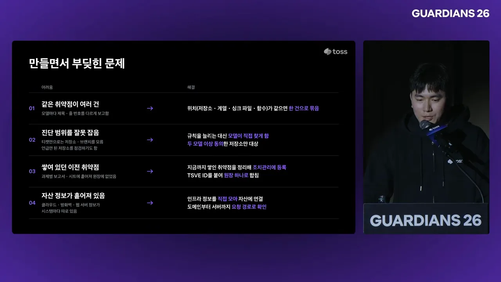
바뀐 것, 권하는 순서
발표자는 이게 정답인지는 아직 모른다면서도 해 보며 확실해진 것 세 가지를 꼽아요. 첫째, 찾는 양이 늘었는데도 정·오탐 판정과 처리 속도가 올해 초와 최근 한 달을 비교하면 다섯 배 가까이 빨라졌어요. 찾는 속도를 처리 속도가 따라가기 시작한 거예요. 둘째, 과제마다 따로였던 관리 창구가 원장 하나로 모였어요. 셋째, Red Team의 역할이 찾는 사람에서 식별부터 관리까지 전체를 조율하는 오케스트레이터에 가까워졌어요.
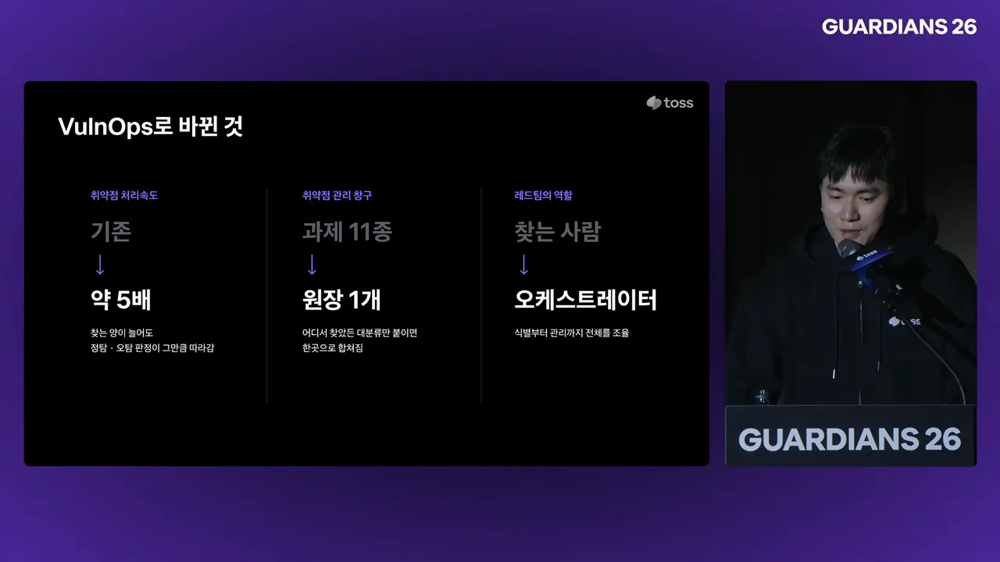
비슷한 고민을 하는 팀에게 권하는 순서도 있어요. 도구를 고르기 전에 취약점이 모이는 흐름부터 만들라는 거예요. ① 취약점이 나오는 일(Task)을 모두 모아 펼쳐 보고, ② 대분류를 붙여 한곳에 쌓고, ③ 무엇부터 언제까지 고칠지 기준을 정하고, ④ 자산과 연동해 어디에 있고 얼마나 위험한지 판단하는 사이클을 만들어요. 개발이나 프로세스가 어려운 게 아니라, 커뮤니케이션과 흩어진 걸 모으는 데 시간이 많이 든다고 해요.
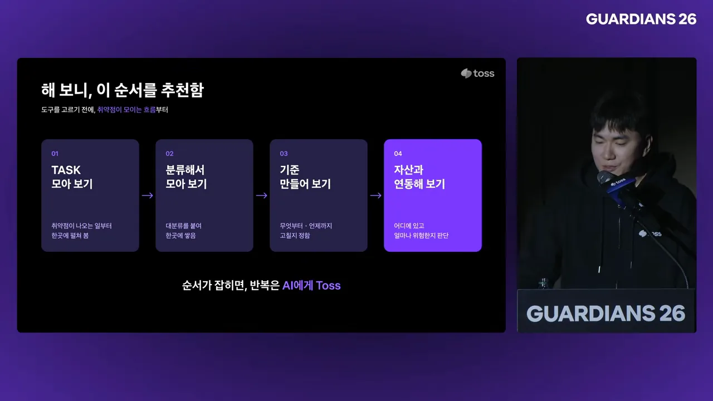
남은 고민: 검증
Red Team이라면 다 공감할 고민이 남아 있어요. 팀은 지금 찾는 것보다 정탐을 제대로 검증하는 데 더 집중하고 있어요. 세 선택지가 있어요. 프론티어 모델에 보안 연구용 권한(슬라이드 표기는 'CVP·TAC 같은 보안 연구용 권한')을 받아 써도 실제 재현이나 익스플로잇 검증에는 여전히 제한이 많아요. 검증에 맞춘 자체 모델이나 로컬 모델을 만드는 건 데이터·비용·운영 부담을 함께 따져 보는 중이에요. 탈옥된 모델은 거부율이 낮지만 백도어나 데이터 유출 같은 새로운 위험이 따라요.
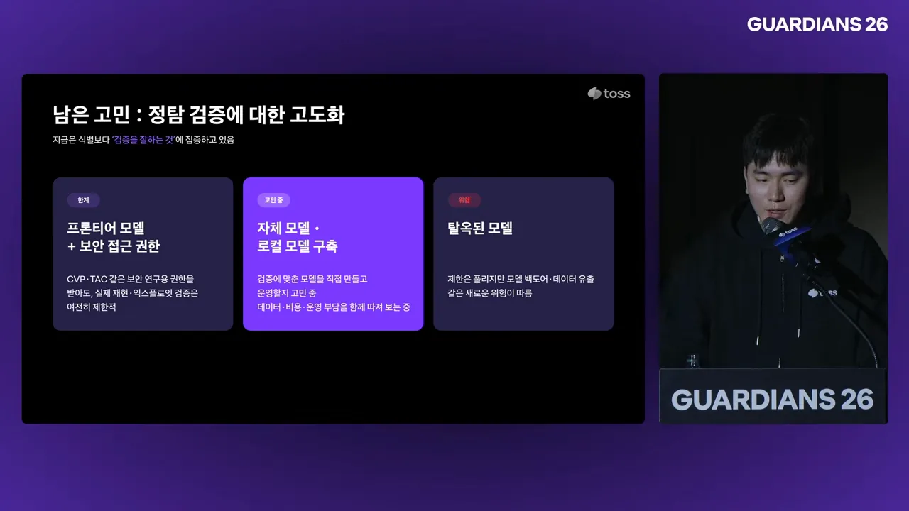
찾는 일은 이미 AI에게 Toss했지만 이제 남은 건 취약점 관리와 고도화된 검증.
— 영상 38:18
발표자는 지금을 과도기로 봐요. 그래서 팀은 이 둘을 자기 방식으로 재해석한 VulnOps로 하나씩 만들어 가는 중이에요.
1~2명 보안팀이 도구를 직접 만든 이유
세 번째 발표는 토스플레이스 Security Tech팀 리더 김민규 님이에요. 어떤 문제에서 시작해 무엇을 만들었고, 어떻게 구현했는지를 다뤄요.
작은 팀이 직접 만들기로 한 이유
슬라이드 첫 칸이 소규모 보안팀의 현실이에요. Security Engineer 1~2명이 클라우드·네트워크·엔드포인트 보안, 위협 탐지·대응, 인증 심사 대응까지 맡아요. 개선할 곳을 찾아도 리소스가 없어 미뤄지곤 했어요. 둘째 칸은 기존 방식이에요. 새 솔루션을 찾아 검토하고 PoC를 하고 계약하기까지 몇 달이 걸려요. 도입한 뒤에도 기능 개선을 요청하면 반영이 오래 걸리고 커뮤니케이션 비용이 들어요. 라이선스 비용이 오르거나 기술 지원 엔지니어가 바뀌는 일도 잦아요.
셋째 칸이 AI 도입 후예요. 작년 말 Cursor로 시작해 3월부터 Claude Code를 쓰면서 보안팀 자체 CI(Continuous Integration)/CD를 만들고, 자동화 Workflow로 수동 업무 대부분을 없앤 뒤 필요한 도구를 하나씩 만들었어요. 지금까지 AI로 만든 코드는 40만 줄, 배포는 3천 번이 넘어요. 슬라이드에는 자동화 워크플로 100개 이상도 적혀 있어요.
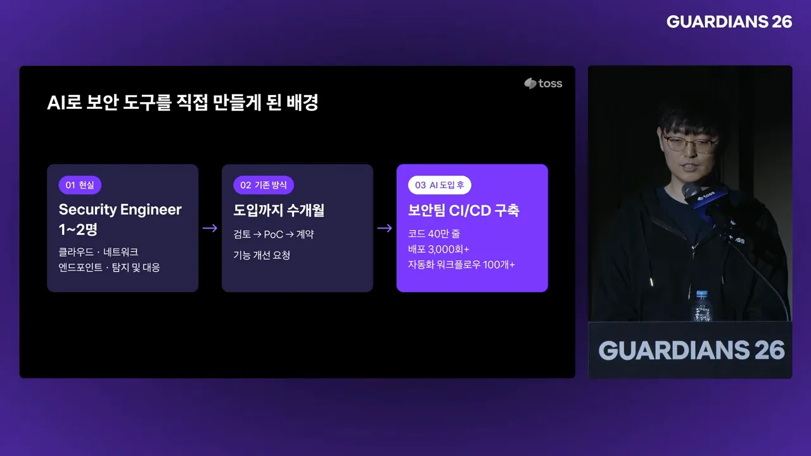
소개하는 도구는 아홉 개예요. 자산·관제(Inventory, Security Hub, Software Scanner), 데이터 보안(DLP(Data Loss Prevention) Self-service, GitHub Credential Scanner, AI Training Opt-Out), 공급망 보안(Artifact Firewall, Public GitHub Scanner, Bumblebee) 순서로 보고, 끝에 반복해서 쓴 엔지니어링 방법을 소개해요.
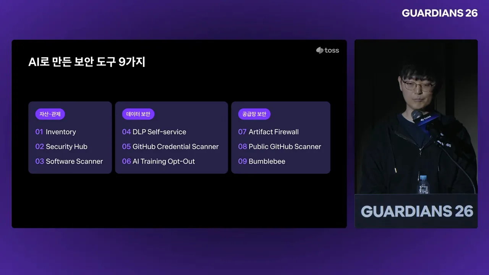
Inventory: 자산 대장을 시스템으로
시작은 엑셀로 관리하던 자산 관리 대장을 시스템으로 옮겨 자동으로 동기화하는 것이었어요. 대시보드를 만들고 AWS(Amazon Web Services)와 쓰고 있는 모든 보안 솔루션에 연동했어요. 슬라이드 기준 자산은 약 11,000개예요. AWS, On-Premise, Application, Endpoint·Identity 네 묶음이에요. 슬라이드에는 묶음마다 연동한 시스템 이름이 나열돼 있어요. 인벤토리도 API를 제공해서 다른 도구가 가져다 써요.
보안 에이전트 운영에도 이 데이터를 썼어요. 윗줄이 기존 방식의 한계예요. MDM(Mobile Device Management)으로 모든 단말에 보안 에이전트를 배포하고 Audit 스크립트로 미설치·미실행을 확인해 자동 설치했지만, 프로세스가 돌아도 서버에 등록이 안 됐거나, 서버 에러를 놓치거나, 최신 버전 업데이트가 빠지는 공백이 있었어요. 아랫줄이 개선 방법이에요. MDM 로그인 이벤트로 단말이 실제로 쓰이는지 보고, 보안 솔루션마다 통신 여부·버전·에러 로그를 보고, Okta에서 휴직 여부와 팀·소속을 가져와요. 여러 소스를 조합해 사용자·단말·서버 상태를 대조하고, 미설치·미동작이면 Alert을 보내 조치하게 해요.
이 로직으로 Coverage Map을 만들었어요. 가운데 원 안의 점 하나가 사람·단말·에이전트 조합이고, 빨간 고리가 위험 사용자예요. 왼쪽은 솔루션별 설치 현황(EDR(Endpoint Detection and Response), DLP Agent, ZTNA(Zero Trust Network Access), Fleet, Bumblebee 등이 각각 190대)이고, 오른쪽은 에이전트 동작 상태와 '사용자 024, Mac, 미동작 EDR' 같은 위험 목록이에요.
Security Hub: 보안 관제 포털
기존에는 OpenSearch나 n8n에서 생긴 보안 이벤트를 받아 처리했어요. 두 번째 Security Engineer가 합류하면서 이벤트를 역할에 맞게 나눠 중복 대응을 줄이고, 놓치기 쉬운 이벤트를 티켓으로 만들어 이력을 관리할 필요가 생겼어요. 그래서 AI가 이벤트를 분석해 노이즈를 걸러 Incident를 만들고 담당자를 배정하게 했어요. 한 달 3,000건이 넘는 티켓을 처리하다 보니 AI 1차 분석으로 자동 처리하는 기능도 만들었고, 사용자 소명 요청과 리마인드 기능도 있어요. 담당자가 대응 이력을 입력하면 정규화해서 DB에 저장하고, 유사 티켓 분석에 써요.
Software Scanner: 보안 검토를 건너뛴 AI 도구 찾기
AI 소프트웨어가 늘면서 보안 검토 없이 쓰는 경우가 종종 생겼어요. 슬라이드 윗줄의 예가 Orca와 OpenCode예요. Orca는 모바일 페어링과 외부 원격 접속을 막아야 하고, OpenCode는 중국 AI 모델을 쓸 수 있어서 MDM으로 관리 설정을 배포해 승인된 모델만 연결되게 했어요. 이런 소프트웨어를 빨리 찾아 보안 검토로 이어 주는 게 목적이에요.
아랫줄이 동작 방식이에요. osquery 기반 오픈소스 Fleet을 전사 배포했어요. 스캐너가 Fleet API로 소프트웨어 목록을 모아 DB에 쌓고, AI가 카테고리를 분류하고 앱 서명을 확인해요. AI 소프트웨어가 나오면 기존 검토 이력과 대조해서, 이력이 없으면 검토를 요청해요. AI 웹 서비스는 SASE(Secure Access Service Edge) 로그에서 AI 카테고리를 스캔해 새 서비스를 찾아요. Fleet은 호스트 이름만 주기 때문에 인벤토리로 사용자 이메일·팀·소속을 매핑하고, 소명 요청은 Security Hub로 보내요.
데이터 보안·공급망 보안 도구
DLP Self-service: 내 단말의 개인정보를 내가 지우기
기존 DLP 제품은 단말에서 찾은 개인정보나 Credential을 관리자만 볼 수 있었어요. 처음엔 사용자에게 파일명과 경로를 전달했는데 효과가 없었어요. 그래서 사용자가 자기 단말의 탐지 결과를 직접 보고, 버튼 하나로 지우거나 예외 요청하는 에이전트를 만들었어요.
구조도의 점선 상자가 사용자 단말이에요. 위쪽 상용 DLP 에이전트가 개인정보·Credential을 스캔하면 탐지 결과는 상용 DLP 서버로, 파일은 사내 AWS S3(Amazon Simple Storage Service)로 가요. 오른쪽 아래 사내 DLP 서버가 API로 탐지 정보를 가져오고, S3에서 파일을 내려받아 파싱·암호화해서 저장해요. 그 결과를 아래쪽 사내 DLP 에이전트에 주면, 사용자가 확인하고 삭제·예외를 요청해요.
에이전트는 Windows와 macOS에서 모두 쓰도록 Rust 기반 Tauri로 만들었어요. 화면은 시스템 WebView를 재사용하고 삭제는 Rust로 구현했어요. 실제 화면에서 사용자는 탐지된 파일 경로와 값(AWS Access Key 등)을 보고, Finder로 위치를 열거나 빨간 '완전삭제' 버튼으로 지울 수 있어요. 오탐이거나 업무상 보관해야 하면 사유를 적어 예외를 요청해요. 매주 시스템 팝업으로 클렌징을 안내하고, DLP 서버 대시보드에서는 전체 탐지 이력, 오탐 예외 처리, 단말 에이전트 이벤트를 봐요.
GitHub Credential Scanner: 과거 커밋까지 비밀값 찾기
다른 회사에서 GitHub에 남은 Credential이 유출돼 피해로 이어진 사례가 있었어요. 그래서 사내 GitHub도 확인이 필요했어요. 현재 코드뿐 아니라 과거 커밋과 PR까지 검사하고, 찾은 Credential이 아직 유효한지 확인해서 폐기하는 게 목표예요. 구조는 단순해요. 스캐너 엔진(Rust, 룰 스캔, 값 암호화)이 사내 GitHub의 브랜치·태그·PR을 미러링받아 탐지 룰로 스캔하고, 찾은 값은 암호화해 DB에 저장한 뒤 유효성을 검증해요. 탐지되면 담당자에게 알려 키 교체·폐기로 이어져요.
수집과 스캔은 증분으로 돌아요. 윗줄 Collection은 저장소 목록을 받아, 미러가 없으면 처음 한 번 복제하고, 있으면 커밋 해시를 비교해 바뀐 경우에만 가져와요. 아랫줄 Scan은 이미 검사한 객체(Blob)는 건너뛰고 새 객체만 봐요. 패턴 검사는 정규식, 엔트로피, 주변 문맥을 보고, EDM(Exact Data Match)은 등록해 둔 Secret과 정확히 일치하는지 봐요. 마지막에 점수와 제외 조건으로 위험 등급을 매겨요. 대시보드에서는 어느 저장소의 어느 파일에서 나왔는지, Credential 종류와 위험 등급, 유효성 상태를 함께 봐요.
AI Training Opt-Out: 학습 설정을 끄는 확장
사내에서 AI를 안전하게 쓰려고 데이터 학습 설정을 관리하는 확장 프로그램을 만들었어요. 확장이 주기적으로 학습 설정을 조회하고, 켜져 있으면 꺼요. 대상은 ChatGPT와 Claude예요. 모든 단말에 빠짐없이 깔아야 해서 MDM으로 배포했고, 서버에 확장을 올려 두고 새 버전이 나오면 자동 업데이트돼요. 확장에서 생긴 이벤트는 OpenSearch에 쌓아서 회사 계정으로 로그인했는지, 학습 설정이 꺼져 있는지 확인해요.
확장은 로그인된 브라우저 세션으로 각 서비스의 설정 API를 호출해요. 위 두 카드가 그 호출이에요(Claude는 grove_enabled = false, ChatGPT는 training_allowed = false). 문제는 Claude Code나 Codex CLI(Command Line Interface) 사용자였어요. 브라우저를 잘 열지 않아서 확장이 돌 기회가 없었어요. 그래서 MDM으로 Managed Settings에 SessionStart Hook을 배포해, 일주일에 한 번 Chrome이 열리며 학습 설정을 확인하게 했어요.
Artifact Firewall: 3일이 안 된 패키지는 받지 않기
공급망 보안 쪽은 Nx, chalk, Shai-Hulud, LiteLLM, Axios, TanStack, Mistralai 같은 공급망 공격 사례에서 출발해요. 이슈가 터질 때마다 사내에서 그 패키지를 쓰는지 매번 손으로 조사해서 피로도가 높았어요. 근본 해결로 릴리스된 지 3일이 안 된 패키지는 내려받지 못하게 했어요.
구조도에서 사용자 단말은 ZTNA를 거쳐, 서버와 CI는 사내 Nexus를 거쳐 Artifact Firewall로 들어와요. 트래픽이 반드시 지나가는 Inline 구조예요. 방화벽 안은 nginx 뒤에 af-blue(활성 슬롯)와 af-green(대기 슬롯)을 둔 Blue-Green 구성이라 무중단으로 배포해요. 그 뒤가 npm·PyPI·Maven 레지스트리예요.
동작은 두 번 걸러요. 먼저 클라이언트가 설치 가능한 버전 목록을 요청하면, 릴리스 시점 기준으로 3일이 안 된 버전을 빼고 남은 목록을 돌려줘요. 클라이언트는 남은 것 중에서 버전을 골라요.
다음으로 실제 패키지 파일을 요청하면 LLM 스캐너가 악성 여부를 판단해요. 윗줄 사전 탐지는 악성 DB(OSV(Open Source Vulnerabilities)·GHSA(GitHub Security Advisory)) 조회와 YARA 패턴(드로퍼, 자격증명 탈취, 난독화, C2 통신)이에요. 아랫줄 LLM 분석은 토큰을 아끼려고 이전 버전과 비교해 바뀐 코드만 뽑아 분석하고, 근거를 확인해 악성이면 차단하고 캐시에 등록해요.
운영해 보니 3일 미만을 전부 막다가 취약점 패치용 최신 버전까지 막혔어요. 그래서 패키지명·버전·사유를 등록하는 화이트리스트·블랙리스트를 만들었어요. LLM이 악성으로 본 패키지는 캐시에 올라 영구 차단되는데, 오탐일 때 캐시에서 빼는 기능도 넣었어요. 대시보드 현황은 전체 요청을 허용·다운그레이드·차단으로 나눠 보여 줘요. 슬라이드에서는 전체 49,347건 중 허용 34,153건, 버전 하향 14,946건, 차단 221건이에요. 아래에서 차단 사유와 스캔 결과를 봐요.
히스토리 화면에서는 한 요청을 자세히 봐요. 왼쪽 위 @upstash/context7-mcp는 4.4.2가 게시 3일 미만이라 목록에서 빠지고 4.4.1이 대신 제공됐어요. 응답 코드 200과 함께, 총 처리 시간 36ms를 레지스트리 29ms와 방화벽 7ms로 나눠 보여 줘요. 팀의 점검 Skill이 처리 시간을 확인하는데, 가끔 Upstream이 느려지는 경우가 있어서 이렇게 나눠 뒀다고 해요. 오른쪽 아래에는 어떤 도구(npm/11.11.0, node/v25.8.0)로 요청했는지도 나와요.
Public GitHub Scanner: Skill·Plugin 다운로드 감시
Artifact Firewall로 레지스트리는 통제했지만, GitHub에서 AI Skill이나 Plugin을 받는 일이 늘면서 공급망 공격 위험도 커졌어요. 그런데 누가 어떤 Repo를 받았는지 보이지 않았어요. 아랫줄이 해결 방식이에요. SASE 로그로 누가 어떤 Repo를 받았는지 식별하고, GitHub 스캐너가 같은 코드를 받아 Semgrep 정적 분석과 AI 악성 분석을 해요. 악성이면 Alert을 보내고 Repo를 차단하거나 단말을 격리해요.
GitHub에서 코드를 받는 길은 Clone 말고도 여러 가지예요. 모두 잡으려고 관련 도메인에 SSL(Secure Sockets Layer) Inspection을 걸었어요. 그런데 GitHub 트래픽을 복호화하자 IntelliJ나 Gradle 같은 Java 도구에서 인증서 오류가 났어요. Python이나 Node는 환경 변수로 해결되지만, Java는 JDK(Java Development Kit)마다 cacerts가 따로 있어서 하나씩 넣어야 했어요. 그래서 MDM으로 15분마다 단말의 모든 JDK를 찾아 cacerts에 Root CA(Certificate Authority)를 넣는 스크립트를 배포했어요.
Bumblebee: 단말에 깔린 패키지까지
공급망 이슈가 터지면 서비스가 쓰는 패키지는 GitHub와 ECR(Amazon Elastic Container Registry) 기반 SBOM(Software Bill of Materials)으로 인벤토리에서 바로 조회돼요. 하지만 단말에 설치된 패키지는 확인이 어려웠어요. 그래서 Perplexity가 공개한 오픈소스 Bumblebee를 전사에 배포했고, Windows는 공식 지원이 없어서 직접 빌드했어요. 아랫줄처럼 Bumblebee 에이전트가 단말 패키지 정보를 모아 OpenSearch로 보내고(7일 보관), 인벤토리가 주기적으로 가져와 최신 상태를 유지해요. 실제로 쓰는지는 EDR Command 로그로 확인하고, 모자란 부분은 Fleet으로 메웠어요. 악성 패키지가 나오면 인벤토리에서 영향 단말을 바로 찾아요.
공급망 공격 모니터: 조사를 자동으로
앞에서 말한 수동 조사를 이렇게 자동화했어요. GitHub 이슈와 Aikido DB로 공급망 공격을 지켜보다가 위협 패키지가 탐지되면, 앞의 도구들로 사내 사용 여부를 자동으로 대조해요. 아래 다섯 칸이 조회 대상이에요. SBOM(서비스 의존성), Bumblebee(단말 설치 패키지), Nexus(캐시 조회), Artifact Firewall(다운로드 이력), 네트워크(IOC(Indicator of Compromise) 통신 이력)예요. 결과는 '조치 필요' 또는 '미검출'로 종합 판정해요.
실제 사례는 관리자 계정 탈취로 npm 패키지 네 개의 악성 버전이 배포된 이슈예요. 화면 맨 위가 npm keyv 6.0.0이고, 함께 flat-cache, file-entry-cache, cacheable-request가 적혀 있어요. 모니터가 탐지하자 여섯 기준으로 자동 조회했어요. 악성 패키지 DB에는 악성 버전 4개가 등재돼 있었지만, 서비스 저장소의 악성 버전 사용 0건, 사내 단말 악성 버전 보유 0대(keyv 설치 단말 108대는 안전 버전), Nexus 캐시 0건, 방화벽 악성 요청 0건, IOC 접속 이력 없음이었어요. 종합 판정은 '조치 필요 0건'이에요. 사내에 패키지는 있지만 악성 버전은 없다는 걸 확인한 거예요.
악성 버전은 Artifact Firewall 블랙리스트에 올려 막아요. IOC가 발견되면 SASE와 방화벽 로그를 추가로 봐야 해요.
설계는 사람, 구현과 검증은 AI
도구 아홉 개를 만들다 보니 자연스럽게 같은 순서로 개발하고 있었다고 해요. 슬라이드 왼쪽 보라색 원 Plan(작업 설계)은 사람이, 오른쪽 두 원 Implement(작업계획서에 따른 구현)와 Verify(검증 기준과 실제 결과 대조)는 AI 에이전트가 맡아요. 둘 사이 화살표가 양방향인 건 목표를 이룰 때까지 구현과 검증을 반복한다는 뜻이에요.
Plan: 작업 계획서 다섯 칸
처음엔 아이디어가 떠오르는 대로 만들다 보니 안 쓰고 버려지는 도구가 많았어요. 그래서 프로젝트마다 작업 계획서 하나를 HTML(HyperText Markup Language)로 쓰고 사람이 최종 검토해요. 다섯 칸은 배경·목적(이슈, 맥락, 기대 효과), Research(오픈소스, 상용 제품, 공식 문서), Spec(상세 기능, 규모, 구조, 리소스), 검증 기준(Spec 구현 확인, 단계별 완료 조건), Environment(Skill·MCP(Model Context Protocol)·CLI 같은 도구와 CLAUDE.md의 사내 규칙)예요.
Research에서는 오픈소스, 상용 제품, 공식 문서를 분석해 장점만 가져와요. GitHub Credential Scanner는 처음에 GitHub Secret Scanning을 검토했지만 유료 기능이고 비용이 너무 높아서 공식 문서만 참고했어요. 오픈소스인 Gitleaks와 TruffleHog에서는 룰과 설계를 참고해 사내 환경에 맞게 정리했어요.
Spec에서는 규모를 파악하고 아키텍처를 정해요. 사내 GitHub 저장소가 약 500개, 전체 Git 이력을 풀면 약 250GB라서 스캔 성능이 중요했어요. 그래서 실제 저장소 하나(3.4GB)로 같은 조건에서 언어별 스캔 속도를 비교했어요. Rust가 가장 빠르고 안정적이어서 골랐어요.
| 언어 | 스캔 시간 | 최대 메모리 |
|---|---|---|
| Rust | 6.9초 | 154MiB |
| Python | 72.2초 | 1,343MiB |
| Go | 112.7초 | 151MiB |
구현에 들어가기 전에 검증 기준을 세워요. 필수 기능과 예외 상황이 기대대로 동작하는지, 메모리 누수나 병목이 있는지, 원본·API·화면의 데이터가 맞는지, 미사용·중복 코드가 없는지, 요청 범위를 지키고 불필요한 기능을 만들지 않았는지예요. AI가 구현하는 단계마다 이 항목을 검증하게 했어요.
Environment는 AI가 일할 수 있게 도구와 사내 규칙을 갖추는 단계예요. 사내 규칙은 CLAUDE.md에 최소한으로만 넣었어요. 왼쪽 카드처럼 Base image는 ECR, Package는 Nexus, Secret은 Vault, 로컬 테스트 후 CI, 외부 업로드 금지, 접속 차단 시 우회 금지 같은 것이에요. Skill이나 MCP도 최소한으로 썼어요. 가장 중요한 건 AI가 구현하고 스스로 검증할 수 있는 도구를 주는 거예요. 오른쪽 카드에 Claude in Chrome, Computer Use, Grafana MCP, 배포 Skill, git·gh·aws CLI가 있어요.
Implement ↔ Verify: goal로 끝까지 돌리기
작업 계획서를 goal 명령어로 실행하면 AI가 구현하고 검증하고 테스트하고, 목표를 이룰 때까지 스스로 반복해요. 화면 속 명령은 '/goal 작업계획서대로 단계별로 구현하고 검증하고 테스트하세요.'예요. 발표자는 작업 계획서를 구체적으로 쓸수록 자기가 중간에 끼어들지 않고 AI가 구현과 검증을 이어 가는 시간이 길어졌다고 해요.
Verify: 배포 뒤에도 계속
배포한 뒤에도 안정될 때까지 검증을 이어 가요. 세 카드가 그 방법이에요. 배포 직후에는 자체 점검 Skill로 도구별 기능을 점검하고, 기능이 바뀌면 점검 항목도 갱신해요. 운영 중에는 스케줄러로 15분마다 도구별 메모리 사용량과 처리 속도를 보고 이상을 감지하면, 분석·수정·검증한 뒤 Claude가 직접 PR을 올리고 Merge까지 해요. 쓰는 Skill이 실제로 도움이 되는지도 claude plugin eval로 Skill이 있을 때와 없을 때 같은 과제를 비교해 개선했어요.